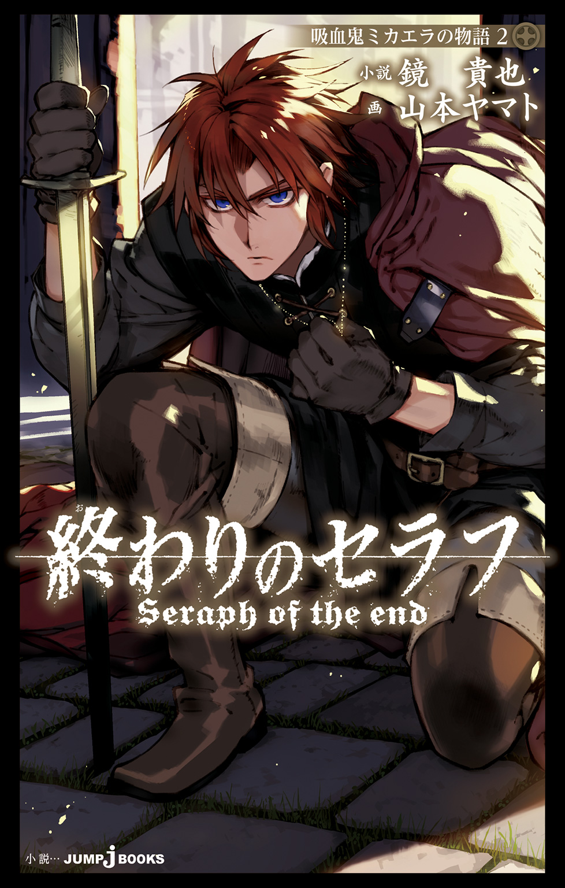
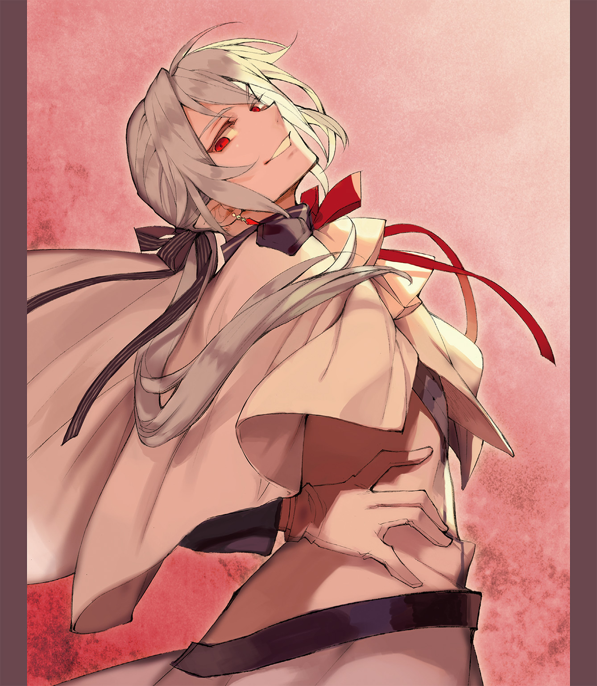
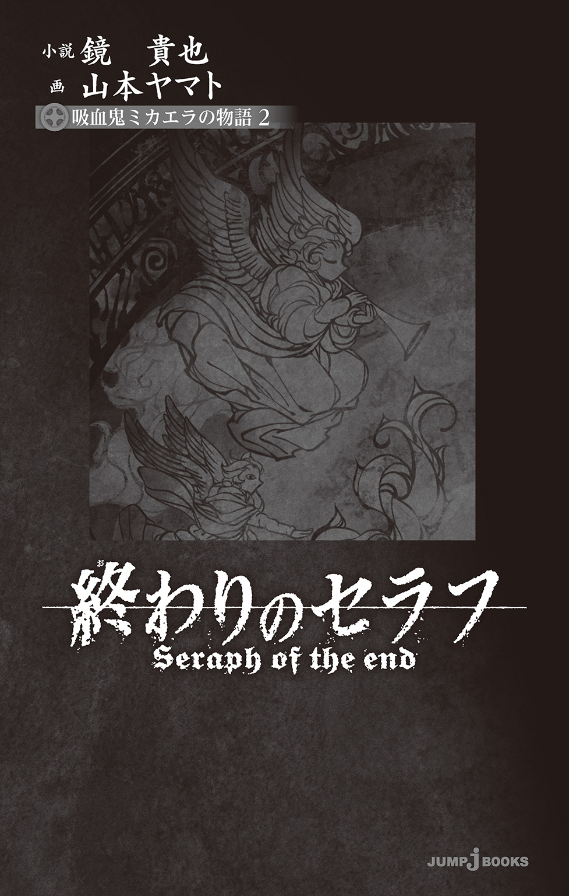
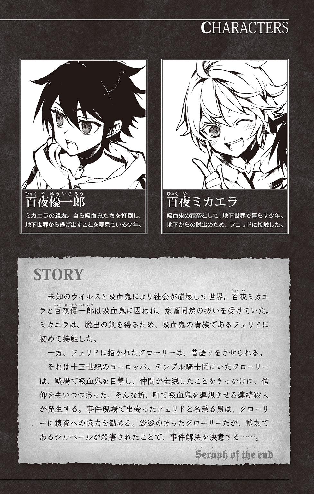
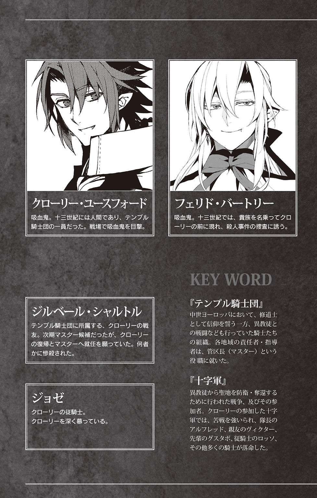

| 終わりのセラフ 吸血鬼ミカエラの物語 2 | |
| 鏡貴也 & 山本ヤマト | |

この本は縦書きでレイアウトされています。
また、ご覧になる機種により、表示の差が認められることがあります。




血だ。
血を寄こせ家畜ども。
ここはかつて神に呪われ、死ぬことができなくなってしまった『吸血鬼』が支配する地下世界。
渇きを癒すためには、今日も血がいる。
「さあ、素直に、大人しく、貴様らの生き血を寄こせ――」
路地裏から悲鳴が聞こえた。
「いやぁあああああああ！ やめて！ 体に触らないで！」
女の声だった。
隣りを歩いていた優ちゃんが、その悲鳴のほうを見る。
「なんだ？」
と、声のほうへと向かおうとする。
その腕を、ミカエラはつかんだ。
「ちょっと優ちゃん」
「なんだよミカ」
「どこ行く気？」
「悲鳴だ」
「だから？」
優ちゃんがこちらを見つめる。どういうことだ？ といわんばかりの顔。
それにミカは答える。
「......残念だけど、僕らに誰かを助ける余裕は......」
また大きな悲鳴が聞こえた。
「くそ」
優ちゃんが走りだす。
「ああもう、優ちゃん！」
暗い路地裏。
十二、三歳の少女が、少年二人組に無理矢理押し倒されていた。
少女はズボンと下着を脱がされ、白い肌が露わになっている。
目には恐怖と涙。
その少女を襲っているのは、いやらしい笑みを浮かべた、十五、六歳の少年だった。
吸血鬼が支配する地で、人間が人間を襲っている。
少年の一人が少女の頭を叩いて、言った。
「ばーか、うるせぇなおまえ。叫ぶなって。大人しくしてたらすぐ終わらせっから」
もう一人が続ける。
「叫んだって、助けなんてこねぇぞ。俺ら十六歳だ。ウイルスで生き残った人間の、最年長組だ。おまえらガキどもの仲間はビビッって近づかねぇよ」
それでも少女は、叫ぶのをやめなかった。
助けて――と。
こんなの嫌だ――と。
そして誰かの名前を呼んだ。たぶん、仲間の名前だ。だが誰もこない。まるでこない。少年の言う通りなのだ。この世界で、十六歳の少年に刃向かおうとする馬鹿はいない。
なにせ四年前。
十三歳以上の大人たちはみんなウイルスで死んでしまったのだから。
そしてあのとき生き残った十二歳が、いまは十六歳。
もうこの世界には十六歳より強い人間はいないのだ。
少年が、叫び続ける少女の顔を強く殴る。
「がっ」
と、そこで悲鳴が止まる。
少女の口から血が流れ出し、地面に滴る。
「馬鹿、おまえ、顔殴んなよ。やるとき萎えるだろ」
「あ、ごめんごめん」
少年たちは下品に笑う。
少女は絶望の顔だった。やはりもう、叫び声はあげない。あきらめたのだ。誰も助けにきてくれない。
ウイルスで世界が滅亡し、さらに吸血鬼の家畜になってしまった子供たちにはもう、救いなどない。
少年の一人が、少女の足をつかむ。
ミカはそれを見つめ、
「......優ちゃん。いこう。僕らにできることは......」
が、そこで、
「うぉおおおおおおおおおおお！」
という、声がした。
優ちゃんの声だ。
「え......」
振り返ると、優ちゃんがどこからか石を拾ってきて、少年に向かって走りだしている。
「噓でしょ」
ミカは慌てて止めようとするが、間に合わない。優ちゃんは少女の足をつかんだ少年の背中を、石で思いっきり殴った。
「......痛ってぇ！」
石で殴っても、十六歳は倒れない。だがダメージはあった。背中を押さえ、地面にうずくまる。
もう一人の少年が反応する。
「おいてめぇガキ、なんだおま......」
という少年の腹を、ミカも走っていって蹴る。
「ぐっ......」
少年がこちらに気を取られている隙に、優ちゃんが少女に言う。
「おまえ、逃げろ」
「あ、あ」
「早く逃げろ！」
それで少女は走りだす。
だが、逃げなきゃいけないのは、自分たちも同じだ。ミカは叫んだ。
「顔を見られちゃだめだ！」
「ミ......」
「名前も言っちゃだめ！ 逃げるよ！」
と、二人は走りだそうとしたが、間に合わなかった。優ちゃんが石で殴った少年に腕をつかまれた。そのまま引っ張られる。
十六歳の腕力は強い。
十二歳の優ちゃんの体では太刀打ちできない。路地の壁に、叩きつけられる。
「がぁっ」
優ちゃんの苦悶の声。だが優ちゃんがこちらを見て、
「逃げろ」
と言う。
だがどこに逃げろと言うのか。逃げても無駄だ。それはわかっている。
ここは狭い世界なのだ。
青空すらない、ひどく狭い地下世界。
そこで顔を見られた。優ちゃんが捕まれば、ミカも、同じ孤児院出身の茜や、子供たちも、全員居場所が相手にわかる。
そうなればどうなるか。
さっき、少年たちが襲っていた少女は十二歳くらいだった。
茜は十一だ。見た目もいい。見せしめに犯される可能性もあるだろう。
じゃあ、どうしたらいい。
どうしたらいいのか。
ミカは足を止め、思考を巡らせ始める。
少年が優ちゃんの襟首をつかみ、路地裏の壁に押しつけて、言う。
「おいガキ、てめぇ馬鹿か？ 俺らに刃向かったらどうなると思ってる？」
優ちゃんがその、少年をにらみ上げて、答える。
「てめぇこそ馬鹿かよ！ 人間同士で争ってどうする。俺たちの倒さなきゃいけない敵は、吸血鬼だろうが！」
するとそれに、しかし、なにを言ってるんだといわんばかりに、少年二人がお互いの顔を見合わせて笑った。
「はぁあ？ おまえなに言っちゃってんの？ 吸血鬼をどうやって倒すんだよ？」
「倒さなきゃずっと家畜だろうが！」
「ははは、馬鹿ガキだな。現実を受け入れろよ。人間に吸血鬼がどうにかできるかよ」
事実だった。
吸血鬼は、人間にどうにかできるような相手ではなかった。
豚が人間を殺せないように。
牛が人間を殺せないように。
家畜には、吸血鬼を殺すことはできない。
「やってみなきゃ、わかんねぇだろうが！」
優ちゃんが拳を振るう。少年はそれを、あっさりよけて優ちゃんの顔面を殴りつける。
「ぐぁっ」
優ちゃんの頭が壁にぶつかった。まるで手加減がなかった。死んでもいいと思って、少年は優ちゃんを殴っている。そしてここでは、人間が人間を殺したところで、処罰してくれるような大人たちはいない。
殺されても、こいつらにはなんの罰もない。
「くそっ」
ミカは走りだす。優ちゃんを、助けなきゃ。
するともう一人の少年が、半笑いでこちらを見て言った。
「お、なんだ、おまえもやる気か？」
ミカが一気に、少年との間合いを詰める。拳を握り、少年の顎を狙う。
当たった！
と、思ったと同時に、少年の拳がミカの頰をとらえた。衝撃にミカの首がぐるっと回る。頭が揺らされてしまって、バランスを失う。その場にくずおれそうになった体に、さらに蹴りが入る。
「がっ......」
それで、ミカも壁に叩きつけられた。
そのまましばらく、視界がぐるぐる回ってしまって状況が把握できない。
ただ、笑い声が聞こえる。
少年たちの笑い声。
吐き気がする。
それは頭を揺らされてしまったせいか、それとも、人間同士で醜く争う自分たちの、あまりの愚かさのせいか。
「......カ............」
「............」
「......カ......ミカ！ 大丈夫か！」
優ちゃんの声。
その声のほうへと目を向ける。
心配そうにこちらを見る、優ちゃんがいた。どうやら自分は、優ちゃんの隣りに座りこんでしまっているようだった。
ミカは優ちゃんをにらんで、
「大丈夫じゃないよ、もう」
と、言ったところで、また顔に蹴りが入った。
優ちゃんも殴られた。
もう、滅茶苦茶だった。性欲を邪魔された少年たちの怒りは大きかった。
家畜の性欲――そう思うとまた、吐き気がした。
少年がミカの襟首をつかんで、持ち上げる。
「ガキが、いい気になってんじゃねぇぞコラ」
ミカはそれに、どう答えようか、悩む。あやまれば許してもらえるのか？
おそらく、否だ。
そのうちこの街で、この少年たちとまた出会うことになる。
そのときに茜がそばにいれば、寄こせと言われるだろう。食料が足りなければ、その食料を寄こせと言われる。機嫌が悪ければ、殴らせろと言われるだろう。
最年長――十六歳グループの中には、素行のいいグループと、悪いグループがいた。だが、それぞれの衝突はあまりなかった。
みなが自分が生きることに必死で、衝突してもいいことがないからだ。
しかしそれはつまり、もしも悪いグループに目を付けられてしまっても、誰も助けてくれないということだ。
自分たちでなんとかする必要がある。
家畜以下の奴隷になるのを、なんとか防ぐ必要があるのだ。
優ちゃんは横で、蹴られ続けている。
ミカの襟をつかむ少年が言う。
「......邪魔した責任は、おまえらにとってもらわなきゃなぁ。ああそうだ、おまえの仲間にも、女がいるだろ」
どうしたらいい。
「殺されたくなきゃ、そいつをここに連れてこいよ」
いったい、どうすればいい。
それを考えてから――
「おい、聞いてん......」
ミカは、口を開いた。
「......うるさいな、おまえは」
「あ!? てめぇいま、なんてった？」
ミカは少年を見つめ、さらに言う。
「うるさいと言ったんだ。そもそも、僕にこんなことをして君たちこそただで済むと思ってるのか？」
「ああ？ いったいなにを......」
だが遮って、ミカは続けた。
低く、小さく、優ちゃんには聞こえないくらいの声で――
「僕は吸血鬼の貴族、フェリド・バートリー様の、お気に入りだ。貴族の館の出入りを許されている。こんなことをして、君たちはどういうつもりだろう。吸血鬼に逆らうのか？」
と、クソみたいなことを、言った。
飼い主の名前を出したのだ。
「敵は吸血鬼だろ」と叫ぶ、優ちゃんとは真逆の言葉。
根っからの家畜の言葉。
だがその効果は抜群だった。ミカの襟首をつかんでいた少年の顔が、蒼白になる。
「......おまえ、貴族に体を......」
「黙れよ。黙って消えろ」
すると少年が怯えた顔のまま、言った。
「は、はは、なんだよ、おまえ。なにが吸血鬼を倒すだ。おまえが一番裏切り者じゃ......」
「だからなんだ？」
ミカは少年をにらみつけて言った。
「おまえらこそ現実を受け入れろよ。助けはもうこない。正義の味方もいない。でも、家族を守らなきゃならない。そのためなら、僕はなんだってする。勘違いするな。ここで偉いのは十六歳じゃない。吸血鬼だ。そして僕には、その後ろ盾がある」
そのままゆっくり、少年の腕をつかんで言う。
「もし今後、僕の家族に手を出してみろ。おまえら殺すぞ」
「............」
少年がそれに、ミカの襟首を離す。一歩下がり、もう一人の少年に言う。
「ああもう、つまんねぇよ、いこうぜ」
それで二人は去ってくれた。
二人がいなくなったのを確認してから、ミカは地面に座り込んだ。
優ちゃんも、地面にうつぶせに倒れている。相当殴られていたので、まさか死んでるんじゃないかと心配したが、
「......全身、痛ぇ」
と、うめくように言ったので、どうやら生きているようだった。ミカはそれに微笑んでから、その優ちゃんの背中を見つめて、言った。
「もう、勘弁してよ、優ちゃん」
すると優ちゃんは起き上がらないまま、答えた。
「ごめん」
「ごめんで済むことかなぁ」
「でも、むかついたんだよ」
「勝てる相手にむかついてよね」
「まあそりゃそうだけどさ」
と、優ちゃんが体を起こした。
「痛ててて」
などと言いながら、地面に座りこむ。まだぐったりしている。疲れた顔で、こちらを向く。顔もあざだらけだった。
「優ちゃん」
「ん？」
「パンダみたいな顔になってるよ」
「はは、おまえもだよ」
ミカは殴られた自分の頰を触ってみる。押すと痛い。青く腫れているかもしれない。もしもフェリド・バートリーが、血の味ではなく、顔で自分を選んだのなら、これはまずいかもしれない。
だが、ミカは優ちゃんを見つめて、笑った。
「まあでも、むかつくのは確かだったけどね」
「だろぉ？」
「それに、そうだな......優ちゃんの行動は正しかったよ。襲われてた子、茜と同じくらいの年だった。なら、茜も襲われる可能性がある。それを防ぐためには、僕らも抵抗するってとこ見せとかないと」
すると優ちゃんが、こちらを見て言う。
「あいつらに、目ぇつけられるかな？」
一応、優ちゃんにも脳みそはあるようだ。ミカは優ちゃんを見て、
「いやたぶん、大丈夫」
「なんで」
「吸血鬼の後ろ盾がついてるって言ったから」
「あ？」
「僕らに手を出したら、吸血鬼に殺されるぞって言っといた」
すると優ちゃんが、楽しそうに笑った。
「なにそれ、おまえすーげー壮大な噓ついたな」
「............」
「吸血鬼なんかと仲良くするわきゃねーのにな」
「............」
そう言って、優ちゃんは笑った。
ミカはその笑顔が好きだった。いや、茜も、百夜孤児院の子供たちも、みんなが優ちゃんの笑顔が好きなはずだった。
突然世界が滅びて。大人たちがみんな死んで。吸血鬼に家畜のように扱われて。こんなまるで未来のない世界で、吸血鬼をぶっ飛ばしてここに人間の世界を作りゃいいんだろ！
なんて馬鹿げた、壮大な、あほらしい夢を語ってくれる優ちゃんの笑顔は、子供たちみんなの心の支えだった。
それを守るためなら、別に、血や肉や体を売るくらい、なんてことはない。
「じゃあもう、家に帰ろうか。帰りが遅いと、子供たちが心配するから」
ミカは立ち上がって、言った。
すると優ちゃんが、
「この顔みたら、茜がうるせぇだろうなぁ」
と、顔をしかめる。
「優ちゃんが悪いんだよ」
「えー、まだ言うのかよ」
「一発目で、石を頭にぶつけてくれてりゃ、勝ってたよ」
「そしたらあいつ、死んじゃうだろ」
「やらなきゃ、やられる。それがこの世界じゃない」
すると優ちゃんが、
「でも、俺たちは人間だろ」
ほんの少しだけ思い詰めたような顔で、そう言った。
その顔を見て、ミカは、うなずいた。
「うん」
「敵は吸血鬼じゃないか」
「うん」
「じゃあ、じゃあ、人間同士で争ってても仕方ねぇだろ」
「そうだね」
でもここでは、人間が人間を殺す。二人ともそれをたくさん見た。
隣りの少年少女の集団が、ささいなことで殺し合いをして食料を奪い合ったのも見た。
優ちゃんが疲れたような顔でこちらを見て、言った。
「それとも俺たち、犯されそうなさっきの女も殺して、食料を奪うべきだったかな......？」
それに、ミカは答えた。
「それ本気で言ってる？」
「言ってない」
「じゃあ、優ちゃんが正しかったよって言われ待ち？」
「そう」
などと言うので、ミカは笑って、言った。
「じゃあ優ちゃんが正しかったよ」
「だろ？」
「もぉ」
と、二人は笑った。
笑ったところで、この世界の暗さは変わらない。それは二人共がわかっている。
でも、それでも、やはり優ちゃんがいるからこそ、ミカは笑うことができた。
優ちゃんはどうも、一人で歩けないようだった。足を痛めたのかもしれない。
「肩貸そうか？」
「いらない」
「あきらかにいるじゃない」
と、肩を貸す。
そのまま二人で、ゆったり歩く。
その、帰り道。
優ちゃんがもう一度言った。
「ミカ」
「うん？」
「......ごめんな」
「なにが？」
「俺のせいで殴られて」
だが別に、それは優ちゃんのせいじゃない。この世界が悪いのだ。優ちゃんは、正しいことしかしていない。
ミカは優ちゃんを見て、悪戯っぽい顔で、言った。
「許さなーい」
「えー」
「なんてね。あ、じゃあさ、僕がミスったときは、優ちゃんも笑顔で許してよ」
「なんだそれ。いっつも許してんだろ」
「えー、僕、優ちゃんと違って、ミスんないじゃーん」
「言ってろ」
と、優ちゃんは笑う。
もうすぐ家につく。
家といっても、吸血鬼に与えられた、廃屋のような汚い建物だ。そこに、百夜孤児院の子供たちと一緒に、暮らしていた。
子供たちは建物の外で駆け回って遊んでいた。
一人がこちらに気づく。
優ちゃんとミカの名前を呼ぶ。
すると全員がこちらに気づく。
最初に笑顔。
それから、ボロボロな姿の二人を見て、泣きそうな顔。
「............」
この子供たちを、このひどい世界から守るためにはいったい、どうしたらいいのか。
ミカはずっと、そればかりを考えている。
正義の味方はもうきてくれないこの世界で。
神の愛なんてまるで信じられないこの世界で。
自分はどうしたら、この家族を守れるのか。ずっとそれを考えている。
フェリド・バートリーに取り入ったのも、そのためだ。なんとか道はないか。光はないか。そう考えて、吸血鬼に取り入った。
これが正しいのかどうか、それはわからない。
だが、やらなきゃ、やられるから――
茜や、子供たちが集まってくる。中にはあまりの不安で泣いてしまっている子供もいる。その頭を撫でながら、ミカは優ちゃんのほうを見る。
その視線に、優ちゃんも気づく。子供たちをあやしながら、困ったような顔で微笑む。
きっと、優ちゃんも考えていることは同じはずだった。
こんなクソみたいな世界で、どうしたらこの家族を守れるのか？
なにかを失敗すれば一瞬で死んでしまうような劣悪な場所で、どうやったら家族の笑顔を守ることができるのか。
それを、ミカはずっと考えて――
◆
◆
◆
トントン。トントントンっと、フェリド・バートリーは万年筆を走らせる。
彼専用の執務室。
二百年前――腕のいい職人に作らせた大きな机の上に広げた羊皮紙の上に、彼はインクを打ちこんでいく。右に、左に、線を走らせ、それから一歩引いて、描いたものを見つめてみる。
「うーん、ちょっと違うかなぁ」
羊皮紙を破る。それからもう一枚広げ、ペン先にインクをつける。
今度はもう少しゆっくり描いてみよう。繊細なタッチで。そうしたら、もう少し理想的な、いい雰囲気を再現できるかもしれない。
「............」
しばらく描いていると、コンコンっと、部屋の扉がノックされた。
そして声がする。
「入っていい？」
クローリー・ユースフォードの声だ。
フェリドは答える。
「いま忙しい」
しかし無視して、クローリーは入ってくる。無粋な男だ。アーティストの芸術の時間を邪魔するような奴は、すぐさま打ち首にするべきだ。まあ、吸血鬼は首を落とされたところで死ぬことはできないが。
クローリーが言った。
「なにしてるの？」
フェリドはペンを掲げて答える。
「実はいままで君には隠してたけど......絵描きになるのが僕の夢だったんだ」
クローリーが床に落ちた羊皮紙数枚を拾い上げて、言う。
「絵描き？」
「うん」
「これ絵なの？」
「どう見ても絵でしょ？」
「地図に見えるけど」
「アートがわからない奴は嫌だね。さて、じゃあ続きを描こうか」
と、フェリドは再びペンを走らせ始める。ゆっくり、ゆったり、繊細なタッチで。今度はうまくいくかもしれない。
クローリーがすぐ横まで歩いてくる。手許を見下ろす。
「やっぱり地図じゃん」
「手許見ないでくれる？ 見られると描けないタイプなんだ。こう見えて、シャイなんでね」
「はいはい。って、これ、この地下都市――サングィネムの地図だね。なんで地図なんか描いてるの？」
その問いに、彼は地図を描き進めていきながら、答えた。
「これをね、外に脱出したいと思ってる子供に見つけさせるんだ」
「ほう」
「で、やったー、脱出できるーって思ってる、きらきらした目の子供を、出口で待ち伏せしてね、アーティスティックに食べちゃう、と」
「......うわぁ、なにそれ。相変わらずの趣味の悪さだな」
「趣味が悪いだなんて。まったく、芸術を解さない奴はこれだから困るよね」
と、フェリドは羊皮紙の上の、点と線、線と点を次々と繫いでいく。ここは慎重さが必要とされる場所だ。少しでも線がブレれば、すべての美しさが失われてしまうのだから。
クローリーが言ってくる。
「そもそも、この都市の地図なんて他にいくらでもあるだろう。君が描く必要があるのかい？」
「そりゃあるよ。全部自分でやったほうがおもしろいし」
と、フェリドは言う。
だがそれに、クローリーはわからないという顔をする。もちろんその、彼の気持ちもわかる。
おもしろい――という感情自体を、吸血鬼はもう、あまりに長く生きすぎて見失ってしまっているから。
吸血鬼にあるのは、血への衝動だけだ。
あとは、永遠に続く生を、退屈に、不毛に、絶望を抱えて生きるのみ。
クローリーが言った。
「絵を描いて退屈が埋められるなら、僕も描いてみようかな」
「手始めに僕の似顔絵でも描いてみる？」
「嫌だよ」
「じゃあなにを描く？ スケベなクローリー君は、女の子の裸とかが描きたいのかなぁ？」
もちろんそれも冗談だ。
吸血鬼は異性に対する欲求もない。
血だ。
血――だけにしか欲情できない。
地図が描き終わる。
羊皮紙から、インクが垂れないようにペンを上げる。
一歩下がる。
腕組みをして、
「......ふむ」
と、地図を見下ろす。
今回の地図の出来は、なかなか悪くなさそうだった。これならこの計画に使ってもいいだろう。
クローリーが不思議そうにこちらを見つめて言ってくる。
「本当に楽しそうに地図を描くなぁ。とても吸血鬼とは思えない」
だがフェリドは無視して、地図だけを見つめる。
この地図に、間違いや失敗は許されないのだ。なにせこの地図を描き、ミカエラに盗ませることは、もう千年以上も前に始めた壮大な計画の一部なのだから。
そして計画は、細かく、壮大で、用意周到なほど、完成したときの喜びは大きい。
「クローリー君」
「ん？」
「この地図をどう思う？」
「それはどういう意図の質問かな？ どの視点で答えればいいの？」
「美しさの視点でだよ」
「美しさ、ねぇ」
クローリーも、地図をじっと見つめる。腕組みをし、指でそっと顎を撫でてから、急になにかを思いついたとばかりに悪戯っぽく笑って、
「やっぱり僕は、裸の女の絵のほうがいいなぁ」
などと言う。
裸の女がいいと。
フェリドはそれに笑ってから、机の上にあった、グラスを倒す。
グラスの中には、十二歳の少年の生き血が入っていた。それがこぼれて、せっかく描いた地図を汚す。血が羊皮紙に染みこみ、みるみるうちに台無しになっていく。
だが、その血を見つめ、クローリーの喉がごくりと鳴ったのが、わかった。
あっさり、血に欲情したのだ。
「はっ、やっぱりクローリー君はスケベだな」
「心外な。お腹が減ってるだけだよ。というか、それを言いにここにきたんだけどね」
「僕はスケベですって？」
「違う。昨日の夜、君の館で血を飲みながら、昔話をしようっていう話をしたろう？」
「ほう」
クローリーはうんざりしたような顔をする。
「初耳って顔しないでよ。君が言いだしたことじゃないか。おまけに僕は、名古屋から呼びだされてわざわざここにきてるわけだし、そろそろ用件を聞かせて欲しいんだけど。それとも、もう帰ってもいいのかな？」
「だめ」
「なら用件を早く言えって」
「ははは」
と、フェリドは笑って、ペンを置く。
どうやら地図の作成は、また明日の仕事になりそうだった。
だが、近いうちに完成させる必要がある。そろそろ次の計画に進む時期のはずなのだ。
吸血鬼には時の流れの感覚がいまいち乏しいので忘れがちになるが――そう。たぶん、そろそろだ。『あの人間』と約束した時間まで、もうすぐ。
だがいまは、
「じゃあ、血を飲みながら、君が吸血鬼になったときの話の、続きを聞こうか」
そう、言った。
クローリー・ユースフォードの、昔話。
しかしそれも、この地図に繫がる話だった。
ミカエラという名の物語。
フェリドを吸血鬼にした男が言っていた、千年を超える、壮大な計画についての物語だ。
十三世紀のヨーロッパでは、人の死はいまよりももっと身近だった。誰かが死んだとしても、現代ほどの悲しみを抱えていたとは思えない。
だが、それでもその日。
誰もが泣いていた。
みなに愛され、これからのテンプル騎士団にとって重要な未来を担うはずの男が死んだからだ。
ジルベール・シャルトルが、死んだ。
それもテンプル騎士団の官舎で猟奇的に殺害された、という知らせは、街中を恐怖に、そして悲しみに陥れた。
「............」
カタン、カタンっと、クローリーは自室で、座っていた椅子を鳴らしながら時間が過ぎるのを待っている。
葬儀には参加しなかった。きっと盛大なものになったろう。ジルベールはみなに慕われていた。当然だ。完璧な男だったのだから。どんな絶望を見ても、神を信じることをやめない奴だった。
きっと、神が愛すのは彼のような男だろう。いや、彼のような男を神は愛するべきだ。
だが殺された。
神は、ジルベールのことも見ていなかった。
クローリーは、胸に下げた十字架にそっと触れた。それから小さく、
「......ジルベールを愛さないなら、いったい、誰を愛するのですか？」
などと呟いてみる。
とそこで、ドンドンっと、扉がノックされる音がした。
今日はフェリド・バートリーという貴族の男がくるはずだった。フェリドはジルベールを殺害した犯人に繫がる、手がかりを持っているらしい。
だが、くるのは昼前という約束のはずだった。
「もうすぐ夕方なんだけど」
と、苦笑するようにクローリーは言う。
目的の場所へいくには、馬車で一昼夜かかるらしいので、早めに出発しよう、ということになっていたのだが。
「遅いよフェリド君。こんなに遅いと、今日は出発できないんじゃないの？」
すると扉が開かれた。
外は雨が降っている。
ひどい雨だ。これではジルベールの葬儀は、大変だろう。敬虔な信徒の葬儀の日に、神は太陽すら与えてくれない。
「............」
扉の外に現れたのは、フェリドではなかった。
扉の向こうに、口ひげを生やした、大柄な男が立っている。そしてその男の顔を、クローリーは知っていた。
ロイ・ルランド。
共に十字軍に参加し、死地を経験したテンプル騎士団の戦友の一人だ。
あの戦場で彼は、ジルベールが引き連れていた部隊にいて、ダミエッタに逃げきることができた。
それ以来ジルベール派として、テンプル騎士団の中でその地位を確立していたはずだった。まあそれも、今回のジルベールの死ですべては無に帰すが。
クローリーがロイを見ると、ロイがこちらをにらみつけるようにして、言った。
「おい、クローリー・ユースフォード。なぜおまえは、まだここにいる」
「......びしょ濡れだよ、ロイ」
「答えろ！ なぜおまえは、ジルベールの葬儀に出ない！」
ロイが怒鳴った。凄まじい剣幕だった。気持ちはわかる。かつての仲間の葬儀に、なぜ出ないのか。
クローリーは答えた。
「僕は出る資格がないだろ。テンプル騎士団とはもう、距離を......」
が、ロイが遮った。
「俺や、他のテンプル騎士たちが生き残ったのは、おまえのおかげだ。仲間たちはみな、おまえの帰還を待っている！」
「............」
「いや、死んだジルベールが一番待っていた。次期管区長候補にも、おまえがなるべきだとずっと言っていた」
などと、ロイは言う。
どうやらジルベールが死んだので、次に祭り上げる人間を探しにきたようだった。
クローリーがそれに半眼で、
「なんだ。これは政治の話かい？ ロイ」
と言うと、しかし、ロイは怒りの形相で部屋に入ってきて、拳を振り上げた。
「ふざけるなクローリー！」
思いきり殴りかかってくる。その拳をクローリーは受け止める。
ロイが怒鳴った。
「政治などどうでもいい！ 仲間が死んだんだぞ！ おまえはなにも感じないのか！」
「............」
もちろん、感じている。
だから葬儀に出ないのだ。もしも出れば、次のジルベールを探しているテンプル騎士団に見つかり、クローリーの名前が挙がるのは間違いなかった。ジルベール殺害の犯人を追うのは二の次になり、政治闘争が始まってしまう。
だからこそ、彼はジルベールの葬儀に出ることができない。
「答えろクローリー！ なぜ葬儀に出ない！」
と、ロイが腰の剣を引き抜いた。
それにロイの背後から、声が上がる。
「お、お待ちくださいロイ様！」
クローリーに付いている、従騎士の少年ジョゼの声だった。ジョゼもロイと共に、ここへやってきていたのだ。
ジョゼはロイの腕を押さえようとするが、ロイはそのジョゼを蹴り飛ばす。大柄なロイの蹴りは強く、ジョゼは部屋の外まで吹っ飛ばされてしまう。
そのままロイはこちらを向く。
剣は振り上げたまま。
クローリーはその切っ先を見上げ、
「おふざけにしては、やりすぎじゃないか？ ロイ」
するとロイが答えた。
「ふざけてるのはおまえだ、クローリー。そろそろ目を覚ませ。もう、あの悲惨な十字軍の戦争は終わった。おまえは前に進むべきだ！」
剣を振り下ろしてくる。
その剣が、速い。彼は本気のようだった。
クローリーは椅子をひっくり返して後ろに飛び退く。飛び退いたさきにあるテーブルに、剣が立て掛けてある。それをつかむ。抜く。
ロイはたぶん、昔よりも強い。いまも彼は、剣術の鍛錬をしているのだ。それがわかる。政治の世界の人間ではない。
だが、それでもまだ、
「......僕のほうが強いよ」
クローリーは剣を振り上げる。剣と剣がぶつかる。おそらくロイのほうが、自分よりも筋肉も、体重もあるだろうが、それでも、クローリーの剣の勢いが、勝った。
ギィンっと金属と金属がぶつかりあう音がし、それからロイの持っていた剣が折れる。
折れるように、クローリーは斬ったのだ。
切っ先がくるくると回り、天井に突き刺さる。
だがクローリーは止まらない。そのまま剣をロイの首に押しつけ、足を払って地面に押し倒す。
「......ぐっ」
と、ロイがうめく。
その顔を見下ろし、彼は冷たく言った。
「帰れよ」
それにロイは、こちらをにらみつけて言う。
「......いったい、おまえはなにから逃げている、クローリー・ユースフォード」
「......別に逃げてなんか」
遮って、ロイは続けた。
「ジルベールが言っていた。おまえは神を失いかけている、と。だが、あの戦場から帰った人間は、口にはしないが多かれ少なかれそうだ。あれはあまりにひどすぎた。神が、我らを見守ってくださっていたとは、とても思えない。だがそれでも、俺やおまえは生き残った。あんな状況でだ。これは、神の導きではないのか？」
そう、問いかけられた。
神の導き。
果たして、そうなのだろうか。
神の導きがあってなお、あんな経験をするものだろうか、と――クローリーは戦場での出来事を思い出す。
ただ、ただ、意味もなく、敵を殺し、味方が殺される光景を。
そしてなにより最後に現れた、バケモノの顔を。いや、やはりあれは幻覚だったのかもしれない。やっと生き残ることができたと思った矢先に、ヴィクターたちを殺されてしまい、あまりの絶望に打ちのめされてしまった弱い自分が作った、幻覚。
だがそうだとしても、自分はもう、神の愛を信じることができなくなってしまっていた。
神の導きなど、ないのだ。
少なくとも、自分の許には。
いや、それどころか、
「......ジルベールすら、殺された。君はそれも導きだとでも？」
するとロイが言った。
「ジルベールはおまえに戻って欲しがっていた。テンプル騎士団には、おまえが必要だと。きっとこれは啓示だ。おまえが目を覚まし、再び神のご意志に気づくための......」
だがそれに、クローリーは顔をしかめ、少し語気を荒げた。
「ふざけるなよロイ。なら、僕のためにジルベールが死んだというのか？」
「聞け。クローリー。我らが生かされたのは、すべて神の......」
「そんな神はいらない。ジルベールは、僕よりも価値のある人間だった。それはヴィクターも、グスタボも......アルフレッド隊長も......」
とそこで、ロイがクローリーの腕をつかんできた。
「......戻ってこい、クローリー。おまえの居場所は、神の御許だ」
クローリーはロイを見つめ、それからため息をついて、
「......馬鹿らしい」
剣を引いた。
床に落ちている鞘を拾い、収める。もう、ヴィクターやジルベールを殺した神に、仕える気にはなれなかった。
ロイが身を起こして、言う。
「クローリー。俺も同じ気持ちだ。なぜ、無能な、価値のない自分が無様に生き残るのか、あの戦場以来、ずっとそれを考え続けている」
「............」
「隊長は素晴しい人だった。ヴィクターもいい奴だった。グスタボはちょっと姑息なとこもあったが、まあ、死ぬ必要はなかった。ジルベールは生真面目に、いつかおまえが戻ってくれると言いながら、よくやっていた」
「............」
「だが結局、みんな死んだ。そして俺たちが生き残った。その意味を、少しは考えろ。神はすぐそばで。すぐ隣りで、見ている」
そうは思えない。
「おまえのことを、見ている」
そうはとても思えない。
「前に進む時期だ。悪魔の囁きに耳を傾けず、真っ直ぐ進むんだ、クローリー」
悪魔――という言葉でまた、クローリーは思い出す。
どれほど願っても神は姿を現してくれないのに、あの戦場に、バケモノは現れた。
人の血を吸うバケモノが。
そして、生き残ったはずのジルベールもまた、血をすべて抜かれて死んでしまった。なにか悪いことが起きている。とても悪いことが。
クローリーは思わず首から下げた十字架に、触れる。
アルフレッド隊長が残した、ロザリオ。
ロイが言った。
「おまえはまだ、神を失っていない。少しだけ道に迷っ......」
「もう帰ってくれ、ロイ。テンプル騎士団に戻る気はない」
「みなが待っている。英雄の帰還を」
「英雄なんかいない。神もだ」
「............」
もしもいまの発言を異端審問官に聞かれればクローリーは処刑される可能性すらあった。
だがロイはこちらを見つめ、もう一度言った。
「......とにかく、これからジルベールの埋葬がある。教会内の墓地だ。俺はそれに参列する。きっとおまえも......」
「僕はいかないよ」
「ならせめて祈れ。死んだジルベールのために」
そう言ってから、ロイは折れた剣を鞘に戻し、外へと出ていく。
「いくぞジョゼ。クローリーは墓地にくる」
「あ、あの......クローリー様」
ジョゼが戸惑ったようにロイと、こちらの顔をうかがうように見る。ジョゼはもう、雨でびしょ濡れだった。
クローリーはそれに、ため息をついて、
「ジルベールの埋葬だ。おまえもいってやってくれ」
「ではクローリー様もご一緒に」
「早くいけよ。これは命令だ」
「あう......」
と、ジョゼはどうしようかと悩むようにしばらくこちらを見つめてから、駆けだしていった。
その、ジョゼの後ろ姿を見つめる。
昼だというのに、外は相変わらず暗かった。強い雨が降り続けている。
クローリーは床に転がった椅子を拾い、再び座る。それから、扉の外の、雨をじっと見つめて、呟いた。
「もしもそこに神がいるなら、答えてみろ。おまえはジルベールを愛したか？」
神は答えない。
「愛するが故に、手許へおくのか？」
神は答えない。
「それとも気にもとめないのか？ おまえを愛した騎士は死んだぞ。せめて雨くらいは止ませろよ」
だが、神はその願いも聞き入れてはくれなかった。
やはり、神はいないのだ。
少なくとも、クローリーの傍らには。
だがその代わりに――
「......汝、神の愛を試すべからず、だよ。クローリー君」
神ではなく、とても軽薄な、まるで詩でも歌っているような男の声が返ってきた。
そして陽の射さない、暗い雨の中。
悪魔のように美しい男が、扉の向こうにそっと現れる。
銀色の長い髪に、しなやかな体。妖艶な笑みを浮かべる一人の貴族。
フェリド・バートリーだ。
彼は部屋に入ってくるなり、
「ほらほら、なーにをグズグズしてるんだい。もう出発の時間だよ？」
などと言ってくるが、すでに待ち合わせ時刻を数時間は過ぎていた。
クローリーはあきれ顔で答えた。
「遅刻したのは君だけどね」
「ちょっとだけね。雨がひどかったからさぁ」
「ひどい理由だなぁ」
「それに、ついさっき起きたんだ」
「雨関係ないじゃない」
「あ、ほんとだねぇ」
と、フェリドはへらへら笑う。
本当に軽薄で、つかみどころがない男だった。神はこんな男を生かし、ジルベールのことは殺す。
これではテンプル騎士団の厳しい戒律を守って、神に仕える意味がない。
クローリーはため息をつき、それから苦笑した。
「まったく、君と一緒にいると、いろんなことが馬鹿らしくなるなぁ」
「どういうこと？」
「善人が死んで、悪人がのさばる」
「それ、もちろん僕が善人ってことだよねぇ？」
「はっ」
クローリーは思わず鼻で笑った。
フェリドもそれに笑ってから、言う。
「死んだジルベールのことかい？」
「ああ」
「まあ、神様は善い奴が好きなんだよ。僕なんか、どれだけ死にたいって叫んでも、神様に断られるからねぇ。おまえみたいな不真面目な奴はくるなって」
「はは、じゃあ君は不死身だね」
「かもね。うらやましいだろ」
と、フェリドはくだらない冗談を言って、笑った。
その妖艶で無邪気な笑顔を見て、クローリーは、少しだけ彼のことをうらやましいかもしれない、と、思う。彼にはモラルや信仰心はないが、だからこそ、なんの悩みもないように見えた。
ただ、ただ、好きなように生きている。
酒を飲み、女を抱き、背徳的なすべてのことに対して躊躇がない。
本当に、神の導きを妨げる悪魔のような男だった。
フェリドがこちらを見て、言う。
「あ、うらやましいって顔したよ。じゃあ、君も僕みたいになりたいのかな？」
「まさか」
「いいよ、恥ずかしがらなくて。僕の仲間になりたいんだろう？ ちなみに仲間になると、神様に嫌われちゃうけどね。でも、毎日女も肉も食べ放題だ」
悪魔の囁きだ。
彼と付き合っていたら確かに、神様に嫌われるだろう。
クローリーは笑って、答えた。
「いまは酒や女には興味ないよ。僕はこの事件の犯人を追いたいだけだ」
だからこそ、今日、ジルベールの葬儀に出なかったのだから。
そしていまから、この街から離れた場所にある、彫金師たちが住む集落へいくことになっていた。
殺された商売女の首に残っていた、銀の針がどこで作られたものかを追うのだ。
といっても、すでにフェリドは、それが誰の手によるものか、つかんでいた。彼の知り合いの彫金師に銀の針をみせたところ、これほど細い針を筒状にして穴をあけることができる職人は、ここらあたりには五人しかいないのだという。
うち一人に聞くと、この細工はエーベルラという名の職人のものだとわかった。
だから今日、その職人のもとへと向かおうという話になっていたのだが、
「いまから出たらつくのは夜中だよ」
クローリーが言うと、フェリドが答えた。
「ゆっくりいけばいい。馬車にワインや食事も用意してある。君こそ用意はできてる？ しばらく帰れないかもしれないよ？」
そう言われ、クローリーは開かれたままの扉の外を見た。
そこには簡易に作られた剣の訓練場がある。貴族の子弟たちが、毎日、クローリーに教えを請いにここにやってくるのだが、今朝、少し旅にでるのでしばらく訓練は休みにすると、生徒たちには伝えたところだった。
ジルベールの死もあってか、みなあっさりそれを了承してくれた。
まあ、毎日ここで訓練して待つ、と言いだす生徒もいたが、とにかく、
「準備はもう、できてるよ。ジルベールを殺した犯人を捕まえるまでは、しばらく戻らなくても大丈夫だ」
クローリーは玄関の横に置いておいた数日分の荷物と、剣を携えて言った。
「いこう。吸血鬼退治だ」
そして二人は出発した。
馬車に揺られながら、クローリーは小窓から外の景色を眺めていた。
彫金師たちの工房がある集落まで、街から二日。その、馬車で走っている間中、ひどい雨は続いていた。
途中舗装されていない場所でぬかるみに車輪を取られ、時間がかかってしまったが。
「そろそろつくね」
と、クローリーは呟く。
集落が近づいているのが、道を見るだけでわかった。あきらかに道が整いならされている。人の出入りがそれなりにあるのだ。
雨は夜が明けたあたりでやんでいた。
分厚い雲がなくなり、強い光が世界を照らし始めている。
小窓から馬車の中へ目を戻し、クローリーは言った。
「フェリド君」
「............」
しかしフェリドは目を閉じたまま、動かない。昨日の夜は馬車の中で、二人でたくさんワインを飲んだのだ。フェリドは、一人で、自分専用だという小樽を全部空けてしまった。まだしばらく、起きることはできないかもしれない。
「フェリド君。もうつくよ」
「............」
「寝てるの？」
そう聞くと、フェリドは目を閉じたまま、答える。
「......全然寝てないよ。僕は寝ないんだ」
「またまた。めちゃくちゃ眠そうな声だよ」
フェリドが少しだけ辛そうに薄く目を開き、こちらを見つめる。
「君は二日酔いしてない？」
「あれくらいならね」
彼が答えると、フェリドは、
「バケモノだなぁ」
とかすかに微笑み、それから眩しそうに小窓を指さす。
「ちょっと窓、閉めてくれる？ 僕、太陽が嫌いなんだ」
「雨がやんで、とても気持ちいい朝だよ」
「うへー」
と、嫌そうにフェリドは顔をしかめる。
クローリーがもう一度窓の外を見ると、集落が近づいてきていた。
もう、集落につく。
「とにかく起きなよ。目的地だ」
「朝は苦手なんだよなぁ」
フェリドは腕についているリングのような装飾品をなでながら、うめくように言った。
と、そこで、御者をしている従者が、大声で怒鳴る。
「フェリド様！」
フェリドが答える。
「ああ〜、ついたの？」
「は、はい！ ですが、ですが......これは......!?」
御者の声の様子がおかしかった。
なにかに怯えるような、声。
クローリーは立ち上がって、まだ動いている馬車の扉を開いた。
「落ちないようにね」
と警告してくれるフェリドの声を無視して、扉の上部をつかんで、ぐいっと上半身を外に出す。
外の天気は、本当によかった。絶好の散策日和だ。
雲一つない空に、陽の光でもう乾き始めた道。その道が、小さな集落へと続いているのだが。
そこだけで四人の死体が転がっていた。作業服の男たちだ。彫金師の工房で働く者たちだろう。
クローリーは顔をしかめて、言った。
「くそ、フェリド君」
すると馬車の中から返事がある。
「先手を打たれてるんだろ？」
「え......」
クローリーは思わず顔を馬車に戻す。フェリドは相変わらず目を閉じたまま、眩しそうにしているが、無視して怒鳴る。
「君、わかってたの!?」
「僕ならそうするしねぇ。証拠を残したと気づいた段階で、隠蔽する」
懐から銀の針を取り出して、くるんっと回す。だが、こんな状況でもいまだ、彼は眠そうだった。
「ちょっと、起きろよ。手がかりが消えたんだぞ」
「別にいいじゃない」
「よくない！」
「もう、朝からうるさいなぁ」
と、やっとフェリドは目を開ける。けだるそうにまた、腕のリングに触れる。それから開かれた扉のほうを見る。少しだけ怯えたように、
「うわぁ、すごい太陽。こ〜れはまいった。陽の光を防ぐリングの調子がおかしいな。あとで直さないと......」
「いいからフェリド君も、外を見......」
「はいはい、見るよ。ヒヌエ。馬車を止めて。ここから歩く」
と、フェリドは御者に命じる。
すると道の中央に倒れていた死体を避けるように、馬車が止まる。
クローリーは馬車の椅子のはじに置いておいた剣を取り、すぐに降りる。
死体のほうへと駆け寄る。
死体についている傷は、全員背中から剣で斬りつけられたもののように見えた。つまり、逃げているところを斬りつけられたのだ。死体は四つ。すべてが背中の傷。
傷の断面は綺麗で、それなりの剣の遣い手によるものだとわかる。
とそこで、フェリドもやっと降りてきた。
ふらふらと近づいてくる。目をしばたたかせ、ひどく太陽を眩しそうにしている。
「ねえクローリー君。調査は夕方にしない？ やっぱり朝は起きる時間じゃないよ」
「だけどぐずぐずしてたら犯人が逃げるよ」
「もう逃げたよ」
「なぜわかる」
という質問に、フェリドは疲れた顔でこちらを見下ろして、言う。
「集落が静かすぎる。この工房は四十人からの職人がいるはずだ。だが、いまは？」
確かに静かすぎる。
聞こえるのは風の音。
草木の葉がすれる音。
そして虫の音だけ。
「......全員、殺されてるのか......？」
クローリーが聞くと、そうだとばかりにフェリドは肩をすくめる。
「たぶんね。で、じゃあどれくらい前に殺されたのか？ これほどの大量殺人だ。目撃者や、この集落にくる予定がある者がすでにいれば、なんらかの騒ぎが起きているはずだ。でもそれは起きてない。つまりそれほどの時間は経ってない。僕らが第一発見者だ。けど、だからといって殺されたてでもない。それは死体を見ればわかる。派手に背中を切られているのに、血の痕が地面にない。理由は？ 雨に流されたからだ。雨が止む前に殺されている。で、雨が止んだのはいつだ？ ヒヌエ」
と、フェリドが聞く。
すると御者が答える。
「三時間ほど前です」
「そうか。じゃあ、血の痕のなくなりっぷりからみると、六時間くらい前の犯行かなぁ」
クローリーはそれに、聞く。
「昨日の深夜か？」
「普通なら、四十人からの集落を昼には襲わないだろうしね。以上。つまり急いだって犯人には追いつけない、ってことで、昼間は寝て、ゆっくり調査しな〜い？」
などと、フェリドは言う。
犯行現場をぱっと見ただけで、そこまですべてわかってしまったようだった。
やはりこの男を連れてきてよかったと、クローリーは思う。きっとこの男なら、ジルベールを殺した犯人のもとへ導いてくれるだろう。
だが。
「フェリド君」
「ん？」
「犯行が昨日の夜なら、君が遅刻しなければ犯人に会えたんじゃないの？」
「そーかもね」
「ちゃんときてよ」
「でも僕がいないとこの集落にもたどりつけなかったろ？」
まあ、それはそうだが。
フェリドが言った。
「それにせっかくできた友達を、犯人に殺されたくないしね」
「ちょっと、じゃあ、君はこうなるとわかってて、なのに僕を犯人に会わせなかったのか？」
フェリドはただ、笑う。
クローリーはそれに、言う。
「そんなふうに守ってくれとは、頼んでない。僕は犯人に......」
「会ってどうする？ もし勝てない相手でも、気にせず会いたいのかい？ で、殺されてもいいと？」
「それは」
「自殺の手助けをするつもりはないなぁ。死にたいならこんな手がこんだことをしなくても、他にもいい方法はたくさんあるよ。ワインを一気飲みするとかね」
「別に死にたいわけじゃない」
しかしフェリドがそのまま、死体のほうを指さして、言う。
「......剣のことは僕より君のほうが詳しいと思うけど。四人の死体の、背中の斬り口。これ、君の見立てでは、全部同じ人間の剣によるものに見える？」
そこで初めてクローリーは四人の死体の傷を見比べてみる。
言われてみると、その傷はそれぞれ、違いがあるように見えた。
犯人は複数いる可能性がある。それも、武装し、よく訓練された剣士が複数いる、ということになる。
しかしそれはちょっと考えればすぐにわかることだった。四十人もの人間がいる集落を襲い、皆殺しにしたのだ。
たった一人でできる犯行じゃない。つまり、
「......あの、戦場にいたバケモノじゃないってことか」
あのバケモノなら、一人でも同じことができる。いや、剣で斬ったりもしないはずだ。
フェリドがこちらを見て、微笑む。
「あれぇ、幻覚だと思ってたんじゃなかったっけ？」
「思ってるよ。あんなバケモノがいたら困る」
「いるかもよ」
と、楽しげに言うフェリドを見つめ、クローリーは言った。
「フェリド君」
「ん〜？」
「君はいったい、どこまで見通せてる？」
フェリドはやはり微笑むだけ。
「遅刻もわざとなんだろう？ で、武装した犯行グループと僕がぶつからないようにした」
「あれはただの寝坊だよ」
「ちゃんと質問に答えろよ。ほんとはもう、犯人もわかってるんじゃないか？」
その問いに、フェリドはやはり笑って、
「いやいや、僕の評価が高すぎるでしょ。それか、まさか君は僕を神様かなにかと勘違いしてるのかな？ 僕にだってわからないことはあるよ」
「ほんとに？」
「ほんとほんと。でもまあ、ジルベール君を殺した犯人の予想は、ある程度できてるけどねぇ」
「なっ。いったい、誰だ!?」
と、クローリーは怒鳴った。
だがそれに、フェリドはこちらに背を向けて、静まりかえっている集落のほうへと目を向ける。
「とはいえ推理と予想だけで犯人を捕まえることはできないだろう。証拠を手に入れないと。だからここへきたんだ。さて、夕方まで待ってくれないつもりなら、そろそろ集落を調査してもいいかな？ 僕は太陽の光が嫌いなんだ。夜の住人だからね」
「夜遊びが好きなだけだろう」
「ふふふ」
笑いながら、フェリドは歩きだす。
クローリーもその背中についていきながら、言う。
「ちょっと、とりあえず犯人の名前は教えてよ」
フェリドは笑って言う。
「僕だったらどうする？」
「この状況で冗談に付き合う余裕はないんだけど」
「ははは」
そして二人は、集落へと入った。
彫金師たちの集落は、ひどい状況だった。
建物のすべてに、職人たちや、その妻、職人に仕える見習いの少年たちの死体が、逆さまに吊り下げられていた。
「......ひどいな、これは」
クローリーは建物の中の一つを選び、近づいていく。
その軒先には、子供の死体が吊り下がっていた。やはり背中に剣の傷。それから、首に針で刺したような痕。その少年の死体を、下ろしてやり、地面に横たえる。どうやら、少年の死体は、血を抜かれているようだった。
数日前に殺された、商売女たちと同じだ。
犯人は、なんのためかわからないが、血を盗むのだ。
そこにはなにか、呪術的な匂いが感じられた。魔女や悪魔崇拝者がやる、儀式めいた雰囲気がある。
だが、これほど派手にやるのは、自殺行為のようにも思えた。これではまるで教会に対する宣戦布告だ。こんなふうにやっていては、すぐにテンプル騎士団や異端審問官がやってくるはずだ。
「いや、そもそもそれが目的か......」
なにせ、ジルベールを――テンプル騎士団の次期管区長候補まで、殺したのだから。
しかしそれに、なんの意味がある？ テンプル騎士団全員を敵に回して、利益のある奴は、誰だ？
「フェリド君。そろそろ君の推理を聞かせてよ」
クローリーは振り返って聞いた。
だが、いつの間にかフェリドは消えていた。
「あれ、フェリド君？」
返事もない。
「フェリド君。どこかな？」
集落の中を見回してみるが、あるのは死体だけだった。本当に、彫金師たちは皆殺しにされたようだった。
「ここにも、あとでテンプル騎士たちを呼ばないと......」
そう呟いてから、集落の中央にあった広場まで歩いていき、もう一度、大きな声で言った。
「フェリド君！ どこ！」
すると返事があった。
「ここだよー」
集落の北西のほうにある建物からだった。クローリーはそちらを見る。
するとやはり、壁に男女の死体が吊り下げられている。その建物の中からフェリドが顔を出して、手招きする。
「こっちこっち」
クローリーは、その、フェリドがいる建物へと続く道を見る。雨のせいで手がかりは減ってしまっているが、それでも、なぜ、フェリドがその建物を最初に選んだのかが、わかった。
よく見ると、そこへ向かう、足跡が多いのだ。本当に、よく見れば、だが。そしてつまりそこが、重要な建物だ、ということになる。
クローリーはその、道に残ったかすかな痕跡を見下ろして、
「これをすぐ見つけちゃうのか。ほんとに怖い男だなぁ」
と、フェリドのいる建物へと進む。
すると途中、足跡の多くは、フェリドのいる建物のほうではなく、さらにそのさきの建物のほうに続いていることが、わかった。
「あれ？」
彼は首をかしげ、それからフェリドがいる建物の中へと入りながら、聞いた。
「フェリド君。足跡、この建物のさきに集まってたように見えるんだけど」
だが建物に入っても、フェリドはいなかった。居間。台所。作業部屋にもおらず、寝室でやっと見つけた。
日よけを閉め切り、真っ暗になっている寝室。
その寝室のベッドに、フェリドは寝っ転がっていた。胸で手を組み、幸せそうな顔で目を閉じている。
「ちょっとフェリド君」
「なぁに」
「疲れるの早いよ」
「まだ起きる時間には早いんだよ」
「こんな死体だらけの場所で、よく眠る気になるよ」
「じゃあクローリー君は、十字軍の遠征中、一度も寝なかったのかい？」
などと言われる。もちろん寝た。死体だらけの中で。しかし、
「あれとこれじゃ、状況が違うでしょ。それより、フェリド君」
「君も足跡に気づいた？」
「うん。でも、足跡はこの奥の建物――」
が、遮って、フェリドは目を閉じたまま言った。
「外の死体は見てないの？ この建物の住人は、剣で斬られてなかった」
それは、確認していなかった。
「......斬られてないと、どうなる？」
クローリーが聞くと、フェリドが答える。
「この建物の主は逃げなかったってことだ。でもなぜ逃げない？ 次々集落の人間が殺されているのに、素直に殺される奴がいるか？」
「......つまり、どういうこと？ もったいぶらないで教えてほしいんだけど」
「続きは寝てからでいい？」
「だめ」
「えー」
と、フェリドは嫌そうに目を開き、それから、腕につけているリングのようなものをぽんっと叩く。
すると、
「わわ、リングが直った」
「へ？」
「いや、こっちの話」
と、急に元気そうに起き上がる。
寝室の日よけを開き、
「おお、神よ。もっと光を。お日様をありがとうございます」
「いったい、なんなの？」
また、なにかよからぬ薬でもやっているのだろうか。
フェリドは楽しげに笑う。
「ちょっと仮眠を取ったら、目が覚めたんだ。さて、なんだっけ？」
「君がこの建物になんでいるのかって話」
「ああ、そうそうそれね〜」
と、フェリドはまたベッドに横になる。
「目が覚めたんじゃなかったの？」
クローリーが聞くと、フェリドは笑ってそのままころころと転がり、ベッドの横にどんっと、落ちる。そしてベッドの下をのぞきこみ、
「はーい、この建物の夫婦が、逃げずに殺されることによって、残した者を見つけ......」
と、言いかけたところで、
「う、うわぁああああああああ！」
ベッドの下から、ナイフを持った六歳くらいの少年が飛び出してきた。
「おわわ」
フェリドが驚いたように後ろに引く。それでもナイフは彼の胸に突き立ちそうで、
「クローリー君！」
と、彼は叫ぶ。
それにクローリーはすぐに動く。足で少年の手を強く踏む。
「あうっ」
ナイフが、落ちる。
「く、くそ！ くそ！」
暴れる子供の体を押さえつける。
「こ、殺さないで!?」
少年が絶望の顔になる。どうやらずっと、ここに隠れていたようだ。
フェリドの話からすると、犯人たちがここで住人を殺して回ったのは六時間以上前とのことだから、それからずっとここにいたのだ。
おそらくは、恐怖で動けなかったのだろう。出ていったら殺されると思ったか、絶対に出てはならないと親に言われたか。
顔が涙でぐしゃぐしゃだった。下半身も濡れている。ベッドの下で、垂れ流しだったのだろう。
クローリーはそれを見つめてから、言った。
「フェリド君。ちょっとお願いがあるんだけど」
「なにかな」
「外にある、死体を片付けてくれない？」
この子の、両親の死体だ。
いまは無残に壁に逆さまに吊り下げられ、血を抜かれている状態だが、そんなものを見る必要はない。
その頼みに、フェリドが答えた。
「服が汚れるから嫌だね」
クローリーはあきれるように、この奇妙な相棒のほうへと目を向ける。
「じゃあ、子供を見ててくれる？」
「その子の顔によるねぇ。好みなら見ててあげてもいいよ♪」
そうだった。こいつは男だろうが女だろうが、見境なしの変態なのだ。いまはこの子を渡せない。
クローリーはため息をつき、少年のほうへと顔を向ける。
「怯えなくていい。僕はテンプル騎士団の者だ」
「え、そうだったんだ」
「うるさいフェリド君。ちょっと黙っててよ」
「はいはーい」
フェリドを黙らせてから、もう一度少年の目を見る。
やはり怯えきった瞳。
その瞳に、言う。
「君は、助かったんだ」
「............」
「いいかい？ だから安心していい。暴れる必要はない。僕の言葉はわかるかな？」
するとそれで、少年がやっと少し落ち着いてきたのがわかった。こちらを見つめ、それから、
「と、父さんと、母さんは」
「ご両親が君を守った」
「......し、死んだの？」
クローリーがうなずくと、みるみる少年の瞳に涙が溜まっていく。その少年の体を抱いてやる。少年は強かった。うっうっと、うめき声はあげたが、それ以上は泣かなかった。だからこそ生き残れたのだ。何時間も音を出さず、ベッドの下にいることができたから。
しかし、すぐに話を聞くことはできそうになかった。まともな精神状態で話を聞くには、血と糞尿まみれの体を拭き、着替えさせ、食事を与える必要があるだろう。それはここではできないことだ。
「フェリド君」
「うん？」
「他に、どこを調べたらいいかな？」
「僕の調査は終わってるよ」
クローリーはフェリドのほうを見る。
「......もしかして、ほんとはここにくる必要なかったんじゃないの？」
フェリドは微笑む。
「なんでそう思うの？」
「君はろくに調査してない」
「まあ、確かに、調べる必要ないしね。この銀の針を作った彫金師の名前はもうわかってるわけだし」
と、懐からまた、銀の針を取りだす。
これを作れる彫金師の名前は確か、エーベルラという名前だ――というところまではわかっていたはずだ。その、エーベルラの顧客リストを探しにここへやってきたのだが。
クローリーは、フェリドをにらんで言う。
「ちょっとフェリド君。僕に隠してることある？」
「ないよ。普通に頭を使えばわかることは、あえては言ってないけれど」
ある、ということだ。そもそも、フェリドは犯人の見当もおおよそついているようだった。ここにはその、犯人を捕まえるための証拠を固めにきたと、さっき彼は言っていたが。
クローリーは聞いた。
「そろそろ、犯人の名前がわかってるなら教えてくれないかな。あと、僕らがここにきた理由も」
「え、理由もわからずここにきてたのかい？」
「僕はエーベルラの顧客リストをここに探しにきたんだと思ってたけど」
しかしそれに、フェリドが小馬鹿にするように、ははっと鼻で笑い、肩をすくめる。
「わざわざこんな遠くまで？」
「......謎かけはいらないよ。結論から教えてくれないかな」
だがフェリドは楽しそうに言った。
「それじゃおもしろくないでしょう。聖書にもこうある。働かざる者、食うべからずとね。あ、でも、君はもう祈るのをやめて、聖書も読まないん......」
「フェリド君」
少し怒ったように言うと、フェリドは肩をすくめた。
それから妙に芝居がかった態度で言った。
「ああ、この銀の針はなんて作るのが大変そうなんだろう。とても高価だろうなぁ。これを一本作っただけで、彫金師は一年は食べていけるだろう」
あくまで、クローリー自身に答えまでたどりつかせるつもりのようだった。まったく面倒な奴だ。
クローリーはフェリドの持つ銀の針を見つめる。
商売女たちを殺した、吸血鬼の牙を。
あれは並の彫金師では作れないものだ。作るのにも時間がかかる。あんな細さで、強度も高い。人の首に何度も刺され、それでも折れたり傷ついたりしない。試作品を作るだけでも、相当な時間を要しているはずだ。
確かにフェリドの言う通り、あれを作らせるには金がかかるだろう。身分も必要だ。腕のいい彫金師の時間はあかない。もしも長期間拘束するなら、他の身分の高い顧客の仕事を断らせる必要がある。
そして、彼が知っている身分の高い人間は、こんな、街から遠く離れた、薄汚れた工房には訪れない。
と、いうことは、
「顧客からの発注を取りまとめてる人間は、街にいた」
彼が言うと、フェリドはにやにやしながらうなずいた。
「それで？」
「つまり顧客リストは、街で手に入れることができた」
「うん」
「君はもう、発注をとりまとめている人間と接触している。この銀の針を作らせた主を――」
遮って、フェリドはにっこり笑う。
「ナルド・バイン。貴族だ」
くそ、やはり犯人を知っていた。
フェリドが続ける。
「そしてこの名前を、君は知っている」
確かに知っていた。
名家バイン家の次男。テンプル騎士団の、上級騎士だった。共に十字軍にも参加した。同じ戦場ではなかったが、彼も生きて、帰った。
ただ、帰ってから彼の様子はおかしくなってしまったと聞いていた。塞ぎこみがちになり、奇妙なうわごとを言うようになった。やがて騎士団にも教会にも顔を出さなくなった。
だが、それはクローリーも同じだ。あの戦場から帰って以来、教会にいかなくなった。だから、ナルド・バインがどのようにテンプル騎士団から離れていったのかはわからない。そもそも、そういう者は多かった。あの十字軍はひどすぎた。騎士団を離れた者は少なくない。
「じゃあ、ナルド・バインがジルベールを殺したのか？」
「さて、どうかな。でも少なくとも、この銀の針の持ち主は、彼だ、ということになっている。おまけに彼は、十字軍から帰国後、奇妙な話を周囲にずいぶんとしていたらしい。戦場で、決して殺せない、血を吸うバケモノに出会ったと」
「......なっ、それは」
「で、人の血を吸えば永遠の命が手に入るのだ。他者の命を喰らって、不死者になるのだ、と、うわごとを言うんだってさ。あ、でもこれ、どこかの異常者も同じような話をしていたなぁ。誰だっけな。一緒にワインを飲んだ奴だったと思うけど。聞き覚えはないかい？ クローリー君」
などと、フェリドが言う。
もちろんその異常者というのは、クローリーのことだ。彼はあの戦場で、吸血鬼を見た。そしてヴィクターたちを、仲間を皆殺しにされた。
フェリドがこちらを見つめて、言う。
「どうやら、君以外にも吸血鬼を見た奴がいたよ」
「......異常者の戯言だ」
「君はその仲間だ」
「......それにあれは、幻覚のはずだ」
「そう僕も願いたいけれど。だって、吸血鬼なんてほんとにいたら、怖くて僕は、夜も眠れないよ〜」
と、フェリドは怯えたような顔を作る。
だが、彼が楽しんでいるのは間違いなかった。おまけに、ジルベールを殺した犯人をわかっていて、吸血鬼を見た人間が他にいる、というのまで知っていて、この工房にくるまでそれをクローリーには教えなかったのだ。きっと、馬車に揺られる道中も、笑っていたのだろう。
この、無駄な犯人捜しの旅の間中ずっと、
「僕のことを馬鹿にして、楽しかったかい？」
そう聞くと、フェリドは肩をすくめた。
「まさか、僕は友達を馬鹿にしたりしないよ」
「はっ、友達を騙す奴なんか友達じゃないね」
「騙してない」
「少なくとも君は、必要なことはなにも言ってくれなかった」
だがフェリドは手をひらひらと振って、
「いやいや、必要なことは全部言ってるよ。必要のないこともたくさん言うけどね」
「じゃあ、ここにはくる必要はあったと？」
すると胸をどんっと叩いて、フェリドが言う。
「もちろん。僕を信じてよ」
まったく信じられない。
クローリーはため息をつき、それから言った。
「なら僕らはここに、なにしにきたの。ナルド・バインの犯行の、証拠は固まった？」
確かに、状況証拠だけで捕らえるには、バイン家には力がありすぎた。確たる証拠がいる。それを得るために、ここにきた、というのなら話は通るが。しかしもちろんそれでも、あの馬車の中でこの話をする機会はいくらでもあったはずだ。
もしも本当に、彼が友達ならば。
するとそこで、フェリドは窓の外へ目をやる。太陽が強く射し込んでいる。さっきまであれほど眩しそうにしていたのに、いまは平気そうにその太陽を見上げ、
「うーん、時間的にちょっと早いんだよね。このお楽しみの続きは、お昼を食べてから夕方あたりに......」
「フェリド君」
と、もう一度クローリーが強めの口調で言うとフェリドは降参するように両手を上げて、
「しょうがないな。じゃあ、その子供を外へ」
やっと話してくれる気になったようだった。
だが、この子を一人で外に出していいものか、と、思案する。
外に出れば、両親の死体を見ることになる。それを防ぐにはどうしたらいいか。
「............」
いや、結局、事実は受け止めるしかなかった。これから少年は、独りで生きていかなければならない。両親は死に、集落の人間たちも死んでしまったのだから。
クローリーは少年を見下ろして、言った。
「......少し、外へ出てくれないかな」
少年がこちらを見上げる。クローリーは続けた。
「外には君の両親の死体がある」
「............」
「ひどい殺され方だ。それに、集落の人間、すべてが殺されている」
「............」
「でも君は生き残った。もう安全だ。わかるかい？」
少年はうなずいた。状況はもう、わかっているようだった。やはり彼は強い子のようだ。
「外に出たら、馬車がある。中に入れてもらうといい。フェリド・バートリーからの命令だと言うんだ」
「わかりました」
と、少年は言った。その頭を撫でてやる。
少年が建物を出ていく。
するとフェリドがこちらを見て、へらへら笑いながら言った。
「お優しいね」
「彼は親を失ったんだ」
「君が殺した異教徒たちにも、子供はいたろうけどね」
「............」
「で、なんの話をしてるんだっけ？」
「結論だよ。もう、経緯の話はうんざりだ」
「愛撫がない男は嫌われちゃうぞ」
「童貞なんでね」
「ははは」
と、フェリドは笑ってから、話し始めた。
「じゃあ、まず、おかしくなった上級騎士、ナルド・バインのことだけど」
「うん」
「戦場から帰ってからすぐ、彼は家に見放されたようだった。本当におかしくなっちゃったんだ。豚の血を飲み。鶏の血を飲み。使用人を殺して血を飲んだ。そうすれば不死者になれると呟いて」
「............」
「こんな奴と一緒にいたらいずれ、異端審問官に目を付けられる。血を飲んで不死になるだなんて、魔術か呪術か知らないけれど――」
「付き合ってたら、一族みな、処罰されるな」
「うん。だからナルド・バインは捨てられた。ある程度の金だけ渡されて、バイン家からは絶縁された。彼の屋敷はまるで廃墟だ。それでも異端審問官が動かないのは、彼が誰とも接触しないから」
「なら、ナルド・バインを殺すのに、証拠はいらない」
と、クローリーが言うと、フェリドはうなずいた。
「そうだね。ちなみに調べてみたところによると、使用人もたった一人しかいない。周囲の人間にも嫌われていて、誰とも接触しない」
「なっ、そこまで調べてるのか」
「まあ、それくらいは君とワインを飲んだ日に調べられるしね」
「ちょっと待ってくれ。じゃあ、君がそのときに犯人を言ってくれてれば、ジルベールは殺されてなかったということか？」
そう、聞いた。
もしそうなら。
もしもそうなら、彼は――
が、そこで、フェリドが少しだけうんざりしたように言った。
「ちょっとは頭を使えクローリー君」
「............」
頭を、使え？
それはつまり、
「......ナルド・バインは、犯人じゃないのか？」
フェリドは銀の針を器用にくるくると回しながら言った。
「商売女殺しは、見事だった。まるでアートだ。なにかの妄執にとらわれている、異常者の犯行に見えた。けれど、あれは一人の異常者に出来るものだったかな？」
それに、商売女たちが八人、一気に殺された光景を思い出す。
七体は等間隔に並べられ、吊り下げられていた。血は一滴も垂れず、搾り取られていた。確かに、路地裏に隠れて、誰にもみられず、たった一人の異常者でそれができるだろうか。
フェリドが続ける。
「おまけに一つの死体だけ、とても杜撰な殺され方だった。急に手を抜いたように証拠を残した。まるでそこで問題が起きましたよ、と、言わんばかりだ。案の定、証拠が残った。この銀の針だ」
針を掲げてみせる。
「これじゃ簡単に証拠を辿れる。顧客リストを持っている奴も、すぐに雇い主を吐いた。困るよねぇ。最近じゃ忠誠心なんて言葉は流行遅れのようだ」
フェリドの話はどうやら、ナルド・バイン以外の犯人へ進もうとしているようだった。その犯人は、ナルド・バインを犯人に仕立て上げようとしている。だがそれは、いったい誰なのか？
彼は続けた。
「話を進めよう。ジルベール・シャルトルは弱かったのかな？」
もちろん強かった。剣の才能もあり、誰よりも努力を惜しまない男だった。だからこそ、次期管区長候補に選ばれたのだ。
フェリドはさらに聞いた。
「簡単に殺せるかな？」
「無理だ」
「じゃあ、ナルド・バインには？」
「話にならない。彼は甘やかされた金持ちだった。努力とは無縁だ。奴にジルベールは殺せない。おまけにナルド・バインは、元テンプル騎士団だ。もしも官舎に顔を出せば、とても目立つ」
それにフェリドは笑った。
「乗ってきたね。やっと頭を使う気になった？」
「............」
クローリーはジルベールの死に様を思い出す。恐怖と絶望に歪んだ顔。だが、首の嚙み傷以外には傷はなかった。剣でどこかを斬られた様子もない。血が飛び散っている様子もなかった。剣も抜いていない。
つまりジルベールは、抵抗できていない。あの、強く勤勉だった男がだ。
フェリドが言った。
「じゃあ誰がジルベールを殺したんだろう。君が戦場で会った吸血鬼かな？ でも、本当にバケモノのように強い吸血鬼が存在するとして、こんな滑稽な小細工をするだろうか？」
しない。アレは、そんな生やさしい相手じゃなかった。
アレと対峙したときに感じたのは、絶対的な、回避しようのない死だ。あのバケモノがそんな小細工はしない。
なら、誰がやるのか？
「............」
クローリーはこの彫金師たちの集落の入り口で、斬り殺されていた職人たちの死体を思い出した。よく訓練された、複数の兵士に斬り殺されたように見える、死体。それも、四十人からなる集落を、皆殺しにする力を持った組織。
クローリーは言った。
「ジルベールを殺したのは、テンプル騎士団か」
テンプル騎士団がジルベールを殺し、さらにその罪を、戦場から帰ってきておかしくなってしまったナルド・バインに押しつけようとしているのだ。そのために、商売女たちや、彫金師たちまで殺した。
すべては、テンプル騎士団の犯行――
フェリドはやっと追いついたかと言わんばかりに笑った。
「ちなみにクローリー君。僕はいまいち神を信じられていないから君に聞いてみたいんだけど、仲間に濡れ衣を着せたり、殺したりするのが最近の天国への近道なのかな？」
もちろん、そうは習わなかった。
隊長から習ったのは、一人でも多く敵を殺し、仲間のために死ね、だ。
それだけを習った。
クローリーはまた、無意識に首のロザリオに触れようとして、
「ほらまたそれを触る」
と、フェリドに指摘される。クローリーは顔をしかめて、言った。
「いつからこれに気づいてた？」
「どうだったかな」
「答えろ」
「この銀の針を見つけたときにはまだ、わからなかった。でもジルベール君が殺されたのを見て、すぐに犯人の目的は――」
「なぜすぐに言わない！」
「はっ、言ったら君はなにをするんだい？ テンプル騎士団の官舎で得意の剣を引き抜き、首謀者を殺す、か？ 君も殺され......」
「首謀者を言え！」
と、クローリーは手を伸ばした。フェリドの襟をつかみ、壁にどんっと強く押しつける。
だがフェリドはへらへらと笑ったままだった。
「嫌だね。それこそ奴らの思うつぼだ。ナルド・バインに罪を着せる必要もない。もう一人おかしくなっちゃった奴がいるからね。君がジルベール殺しの犯人に......」
「黙れ。さっさとジルベールを殺した犯人の名前を――」
「聞いてどうする？ そもそも君に怒る資格があるのかい？ もしも君がテンプル騎士団を離れていなければ、首謀者が誰かなんて僕に聞く必要はなかった。誰がジルベールと次期管区長の座を争っていたかなんて、すぐにわかることだ」
「............」
「だが君は知らない。テンプル騎士団じゃないからだ。さっきここで助けた子供に君はテンプル騎士だと名乗ったが、はは、笑わせるなよ。君はもう、仲間や神から逃げただろう？」
「......僕は」
「ジルベール君は政治に巻き込まれ、苦境に立たされていた。英雄の帰還が必要だったんだ。だが英雄は神を失い、まるで帰らない」
「............」
「ジルベール君の葬儀の日にきた、ロイ・ルランドもそうだ。ジルベール派は主を失った。総崩れだ。それも身内に殺された。信用できる仲間は少ない。なにせ相手は用意周到で、政敵を殺したり罪を着せるためならなんでもするような奴らだ。でもそれでもまだ、英雄が帰ってきてくれれば......」
「............」
フェリドはにっこり笑って、一度言葉を止めた。それから、クローリーの腕にそっと触れ、続けた。
「って、話を、僕がちゃんとしてたら、君は急に都合よく神を取り戻してテンプル騎士団に戻った、と言うのなら、僕は裏切り者だね。謝ろう。でもまあ、僕にも僕の正義がある。情勢はもう止められない。戻ったところでロイ・ルランドと一緒に、君も殺される。だから――」
「僕を葬儀に出さず、こんな街から離れた場所まで連れてきたのか......」
やっと、フェリドの意図がわかった。彼はクローリーを、政治闘争の中心から引き離したのだ。殺させないために。
フェリドは笑った。
「友達思いだろう？ いっそ親友って呼んでいいよ」
確かに、命の恩人だ。
だが、
「頼んでない」
「君はジルベールに戻ってくれと頼まれて、戻ったかい？」
「............」
「あれ、これちょっといじめすぎかな？」
クローリーは、フェリドの襟を放した。フェリドは正論しか言っていなかった。気づこうと思えば、気づけたことばかりだ。だが気づかなかった。自分は気づこうとしなかったのだ。
クローリーはロザリオをつかみ、胸に強く押しつける。それで胸の奥の痛みを誤魔化そうとする。だが、痛みが消えない。強い痛みが、消えてくれない。
「......くそ、フェリド君」
「なあに」
「いじめられすぎて、胸が苦しい」
「ははは」
「笑い事じゃないよ」
「ああ、そうだね。神を失うのはいつだって悲劇だよ」
と、フェリドがほんの少しだけ悲しげな顔を作る。
その、フェリドの顔を見つめて、クローリーは聞いた。
「君も神を失ったことが？」
「むか〜しね」
「そんなに歳は変わらないだろう？」
「さてさて、どうかな」
「ねぇフェリド君」
「うん」
「ロイは殺されるのか？」
と聞いた。答えはわかっているのに。だが聞かずにはいられなかった。きっとこれは甘えだ。
そしてフェリドはあっさり答えてくれる。
「残念ながら」
「いま戻っても間に合わない？」
「ジルベール君が君を呼んでいたときなら間に合ったけれど」
それはもう、絶望的なほど取り返しのつかない昔のことだった。なにせ、ジルベールはすでに死んだのだから。
クローリーは床を見つめ、ため息をついてから、うめくように言った。
「......そうか」
「うん」
それからしばらく、フェリドは黙ってくれていた。
◆
◆
◆
半月後。
夜。
その日はまた雨だった。ひどい雨だ。しっかり目を見開いていないと、数歩先が見えないほどの強い雨。
ここのところ街で続いている連続吸血殺人事件は、いまや街中を恐怖に陥れていた。
ジルベール・シャルトル、ロイ・ルランド他、何人ものテンプル騎士たちを殺し、さらに彫金師たちの集落まで全滅させた。
この街は呪われ、血を吸うバケモノが徘徊しているという噂で持ちきりだった。
夜に出歩く者はおらず、街は静まり返っている。
だがその日は、雨の向こう側で、笑い声が聞こえた。
酒場から出てくる、男たちの声。
夜を歩く吸血鬼を恐れない、剛胆なテンプル騎士団の、上級騎士の男たちだ。
その数は、七人。
清貧、貞潔、従順の誓いを立てた者たちとは思えないほど下品に大声で騒いでいた。
「............」
その男たちを、クローリーは雨具を身につけ、暗闇でじっと見つめている。名前も顔も、知ってる者たちばかりだった。クローリーがあの戦場で、命を救った者たちだ。
彼は真っ直ぐ、男たちのほうへと進んでいった。
すると一人がこちらに気づいた。そこにいる騎士たちの中で、一番腕の立つ男だ。こちらを見て、言った。
「なんだ、おまえ」
他の騎士たちもこちらを見る。
それにクローリーは、答えた。
「......怯えろ。血を吸うバケモノだ」
だが、騎士たちは怯えなかった。当然だ。彼らが血を吸うバケモノを演じて、商売女や、彫金師や、テンプル騎士団の仲間を殺したのだから。
彼らはお互いの顔を見合わせて、笑った。
「はぁ？ おまえ、なんの冗談だ」
「物盗りなら、相手を間違えてるぞ。俺たちはテンプル騎士団だ。何人いるか知らないが、くだらない冗談は......」
と、喋っていた男の首を、クローリーは剣で刎ねた。
「なっ」
すぐに六人の男たちは剣を抜いた。騎士団の訓練を受けているだけはある。反応がいい。
「何者だ！」
と、言った男の左足を根元から切断する。
「ぐぁ」
「こいつ強いぞ！ 囲め！」
囲まれた。右から剣がくる。だがそれを、身を少しそらすだけで、かわす。剣は彼の雨具をかすかに斬り裂いただけで、終わる。
代わりにクローリーの剣が、腰を斬り裂く。
これで残り四人。
振り返る。雨具が外れて、クローリーの顔が露わになる。その、顔を見て、男たちは驚愕の表情になる。
「クローリー・ユースフォード」
「なぜ、貴様が」
それにクローリーは言った。
「おまえら、ジルベールやロイを殺したな？」
「ち、違っ、待て。これには事情が――」
と、言った男の首を刎ねた。
もう、事情を聞いてやる必要はない。
残り三人。
その三人は、勝ち目がないことを悟って、三人バラバラに逃げようとしている。その、逃げる一人の背中を斬った。
さらに懐からナイフを取り出し、反対に逃げた男の首に向かって投げる。
ナイフは雨を切り裂き、真っ直ぐに飛ぶ。首に刺さる。死んだ。
残り、一人。
その一人は、中では一番剣の腕が立つ男だった。だが、彼はまったく仲間を顧みることなく、逃げた。テンプル騎士団の教えでは、相手が三人以上でない限り、撤退は許されていないはずだが。
クローリーはその男の背中を追う。
しばらく走って、追いつく。
男は逃げきれないと悟って、振り返る。剣を振り上げてくる。やはり、それなりに速い。その剣を、受ける。数度。そのまま、巻きこむように剣を回す。
すると、男の剣が絡め取られ、宙を舞う。
「くそっ！」
男が叫んだ。
「くそ！ くそ！ くそ！」
その男に向かって、剣を振り上げる。
すると男が言った。
「ま、待ってくれ！ 俺を殺してなんになる！ すべてはテンプル騎士団の未来のためにやったことだ！」
「............」
「それにこの件に関わったのは、俺たちだけじゃない。殺すなら、何百人も殺さなきゃならないぞ」
クローリーは、男を冷たく見下ろして言った。
「......だが、首謀者は君らだ」
「大義のためだ！ 騎士団の、未来のためだ！ ジルベールや、ロイも、こんなことは望まない。アルフレッド隊長もだ！ なあクローリー。話を聞いてくれ。いや、おまえも騎士団に戻ってくれ。みながおまえを......」
が、そこで、
「残念だけど、僕がやってることに大義はないんだ」
クローリーはそう言って、剣を振り下ろした。
男の上半身が落ちた。
大量の血が流れだすが、それをすぐに雨が洗い流してしまう。
そのまましばらく、かつての同胞の死体を、見下ろす。
雨は相変わらずひどい。雨具の切り裂かれた隙間から、雨水が染みこんでくる。びっしょりと服が濡れて、全身が重い。
その、彼の横に、フェリドが現れる。
「ねえクローリー君。すぐに逃げる約束だよ」
フェリドだった。
「......君こそ、こんなところを誰かに見られたら投獄されるよ」
「まあ、しばらくは誰にも見られないと思うけどね。なにせみな、存在しない吸血鬼に怯えてる」
「吸血鬼はいま殺したよ」
と、クローリーが言うと、フェリドも地面に倒れている、上半身と下半身が切り離された死体を見る。
「おかしいな。吸血鬼は不死身のバケモノだったはずじゃ？」
「冗談を言う気にはならない」
「じゃあ帰ろう。館に温かいスープを用意させてる」
クローリーは、フェリドの顔を見る。彼は相変わらずへらへら笑っているが、いまはそのいつも不真面目な態度に、救われるような気がした。
「肉も食べたいな」
「禁欲の誓いは？」
「テンプル騎士だったのは、過去のことだ」
「ははは」
◆
◆
◆
日常に戻った。
平穏な日常。
日々を、子供たちに剣を教えることに費やすだけの毎日。
子供たちは前にもまして、真剣に訓練にのめりこんでいた。街に吸血鬼が出るという噂が出て以来、誰もが恐怖に打ち勝つ方法を求めている。
最近では従騎士のジョゼが、生徒たちに剣を教えにきてくれていた。テンプル騎士に戻ってくれとうるさい彼の出入りを断らないのは、情報を仕入れるためだ。
七人の上級騎士が殺されて、今後どう動くのか、彼と繫がっていれば、ある程度聞くことができる。
「クローリー様」
と、声をかけられた。彫金師の集落で助けた少年だ。名前はマルンと言った。歳は八歳。彼は奉公先が決まるまでの間という条件で、しばらくクローリーの家に住んでいるのだが、職人の息子のせいかよく仕込まれており、家の仕事や身の周りのことはなんでも器用にこなしてくれていた。
彼がきて以来、家は隅々まで綺麗で、掃除を頼んでいた女中はやることがないと困ってしまっているくらいだった。
少年はというと、最近では剣にも興味を持っているようだった。ジョゼに基礎を習いながら、将来はクローリーのような立派な剣士として、テンプル騎士団に入るのだと息巻いている。
その、マルンが言った。
「ジョゼ様がお見えです」
それに顔をしかめて、クローリーは答える。
「またきたのか。毎日じゃないか」
すると、
「当然です！ 私はクローリー様の従騎士ですから。それに、剣術道場の、代理教師でもあります！」
ジョゼが勝手に家の中に入ってきて、言う。
「そんなに強くないのにね」
「もちろんクローリー様にはとてもかないませんが、生徒たちよりは強いですよ。というか、クローリー様は少しは私にも手ほどきをしてください」
「じゃあやっぱり強いってことで」
「クローリー様！」
と、言いながら、土産の果物を台所へ置いてくれる。それからマルンと夕食の話し合いをする。まさか夕食時までいるつもりだろうか。
「ああ、それに聞いてくださいクローリー様。マルンに少し剣を教えたのですが、凄い才能ですよ。これでは私が抜かれてしまう日も近いです」
ジョゼがそう言うと、マルンが嬉しそうに顔を赤らめる。ジョゼは確かに、いい教師になりそうだ。アルフレッド隊長とは違い、褒めて伸ばすタイプだ。
だが、まあ、
「ジョゼ」
「はい」
「君はちょっと、基礎が足りてないよ」
するとなぜか、ジョゼが目を輝かせて、
「やっと私に教えてくださるのですね、クローリー様！」
「え、あ、いや、そうじゃないけど」
「どの基礎でしょうか？ もちろん全部やりますが、とりあえずどれをやったらいいでしょう？ あ、あの、剣を抜いてもいいでしょうか？」
「だめだよ」
「お願いします！」
と、懇願されるので、顎で抜けと合図した。するとジョゼが剣を抜く。構える。テンプル騎士団で習う、基礎通りの構えだ。
その向こうで、雑巾を持ったマルンがじっとこちらを見つめている。
それにクローリーは苦笑する。
ジョゼが言った。
「ここから、どう動けば......」
「動くな。もっと姿勢を低く」
「は、はい」
「もっと低く」
「はい！」
「そこで維持しろ」
「はい！」
「そのまま、五時間」
「はい............え!? 冗談ですよね？」
クローリーは肩をすくめて言った。
「僕の師匠は半年動くなと言ったけどね」
「ご、五時間頑張ります！」
するとマルンも、訓練所から模造刀を取り出してきて、
「ぼ、僕もやってもいいでしょうか」
クローリーはうなずく。
「いいよ。もう、十分部屋も綺麗だし」
するとマルンは嬉しそうに、ジョゼの横で、基礎の型を取る。その姿勢が低く、安定している。才能があるというのは本当のようだった。鍛えれば伸びるだろう。いいテンプル騎士になる。彼の、両親を殺したのもテンプル騎士団だが。
「ジョゼ様。ご一緒させていただきます」
「よし。やるぞマルン」
「はい！」
「ちなみに私は、もう、足が震えてきてるんだけど」
「頑張りましょう！」
クローリーは笑った。ジョゼはだめだ。おそらく才能はない。だが彼は優しく、愛されるのがうまい。そしてきっと、そのほうがずっといいだろう。クローリーのように強くなったとしても、結局、誰一人守れないのだから。
「少し、外に出るよ」
「あ！」
と、ジョゼが言う。ついていく、と言いかけて、しかしいまは修業中だ。
クローリーはにやりと笑って、
「五時間ね」
ジョゼがはめられたという顔になる。
クローリーは笑いながら玄関を出る。外はまだ昼だ。近所に住む人間たちが、こちらに気づき、次々と笑顔で挨拶してくる。
「あ、クローリー様」
「お出かけですか、クローリー様」
それに、彼は適当に相づちを打つ。
この時間はまだ、人通りが多かった。だが、夕方になるともう、人はいなくなる。
連続吸血殺人事件は、いまだ解決していなかった。それどころかむしろ、犠牲者は増える一方だ。
なにせ酒場帰りの屈強なテンプル騎士たちが、七人も殺されてしまったのだから。
「............」
もちろんその犯人は彼なのだが。
しかしテンプル騎士たちは、ジルベール殺害の濡れ衣を着せるために、あらかじめ用意していたはずのナルド・バインの名を、いまだ公表していなかった。首謀者たちを殺されて混乱しているせいだろう。
だがいつまでもこのままというわけにもいかない。ここのところの事件は、テンプル騎士団の名を傷つけている。さらにこのような異常な事件が続けば、異端審問官もこの地に訪れるだろう。そうなるのは、騎士たちにとってはまずい。
詳しく調べられるのもまずいし、この程度の事件を解決できないのかと、やはり名誉を損なう。
だからごく近いうちに、ナルド・バインは連続殺人の犯人として、捕らえられるはずだ。そして極刑になる。
それを助けるつもりは、彼にはなかった。ナルド・バインは、すでに壊れてしまっていた。従者や使用人を何人も殺し、血を吸っているというのだ。それでは、十分罰せられるべき罪は犯してしまっている。
だが、それでも。
「............」
彼が歩くさきに、瀟洒な作りの馬車が止まった。御者の少年の顔を知っている。名前は確か、ヒヌエ。フェリドの屋敷にいる子供だ。
その、馬車のほうへと、クローリーは進む。馬車の傍らにくると、ヒヌエが扉を開いてくれる。
「どうぞ、クローリー様」
「ありがとう」
馬車の中に入る。さきに中にいたフェリドの前に、座る。フェリドがこちらを見ないまま、言った。
「やあクローリー君。久しぶり」
「うん」
「元気だった？」
「前に会ったのは、たった三日前だけどね」
「君がいないと退屈でさ〜」
「でも僕といてももう、楽しいことなんかないよ。なにせ吸血鬼退治は終わった」
だがフェリドはそれに首をかしげて、
「そうかな？ 街はまだ、その話題で持ちきりだけど」
だが、その権力闘争に忙しい吸血鬼はもう死んだ。クローリーが殺したのだ。街の人間たちが怯える相手はもういない。
しかしフェリドは楽しげにこちらを見つめて、言った。
「それに、ほんとの吸血鬼を探す冒険が、まだ残ってるしね。君があの戦場で......」
「幻覚の吸血鬼ね」
「ナルド・バインも見たと言ってる」
「異常者の戯言だ」
「それどころか、吸血鬼に憧れて、血まで飲んでるらしい。これは彼が殺される前に、話を聞きにいくべきでしょ」
「......じゃあ、今日、君が僕を呼びだしたのは」
「ただ友達に会いたかったからだよ」
「で？」
するとフェリドはにやにや笑い、
「あと、ナルド・バインの捕縛が決まったんだ。五日後。テンプル騎士たちは犯人を大々的に発表して、彼を捕らえる」
そろそろだとは思っていたが、ついにその日がくるようだ。
しかしジョゼはなにも言ってなかった。おそらく、知らされていないのだろう。その、テンプル騎士が知らない情報を、フェリドは知っている。
「まったく、君はいったい、どこでそんな情報を得てくるんだろう」
フェリドは笑う。
「偉い人から聞いたんだけど」
「テンプル騎士の？」
「もっと上だよ」
クローリーはため息をついて、言う。
「ずいぶん友達が多いじゃないか。もう、僕のところなんかにこなくてもいいじゃない？」
「なんだ嫉妬かな？ でも僕は、君みたいな奴が好きなんだよ。吸血鬼の夢を見ちゃうような、少年の心を忘れな......」
「はいはい」
「ちゃんと最後まで聞いてよ〜」
と言いながら、フェリドは御者に命じる。馬車が向かうさきは、ナルド・バインの屋敷だろう。
クローリーは言った。
「僕は、いくことに承諾してないけど」
ナルド・バインの屋敷へいって、いいことがあるとは思えなかった。ナルド・バインは、おかしくなってしまっている。それに、テンプル騎士団から監視もされているだろう。いま、ナルド・バインに関わったことを誰かに見られれば、その被害は、ジョゼやマルン、クローリーが接触している者、みなに及ぶ可能性がある。
だがそこで、まるでクローリーの頭の中を見透かしているかのようにフェリドが言った。
「大丈夫だよ。君は処罰されない。なにせもう、テンプル騎士があまりにみっともなく死にすぎてるからね。かつての十字軍の英雄、クローリー・ユースフォードを祭りあげることはあっても、濡れ衣を着せて殺すようなことはない」
「という、君の話を信じて、皆殺しにされたら？」
「可愛く謝るよ」
「謝る間もなく打ち首かもしれない」
フェリドが楽しげに、こちらを見る。
「でも、君もいきたいだろう。戦場で見たアレが、幻覚なのか、どうか。知りたくてたまらない」
「............」
「自分の仲間はなにに殺されたのか？ それとも、自分の心の弱さがみせた、ただの夢か。もしも夢じゃなかったら。もしも本当に、あれが正真正銘本物のバケモノだったなら、君はどうする？」
その問いに、クローリーは答えた。
「関わるべきじゃない」
アレには勝てない。それはすぐにわかった。剣で斬っても、刺しても、効かないのだ。そんな相手とどう戦う。
だが、フェリドはこちらを見つめたまま、にやりと笑った。
「復讐したいと顔に書いてある」
「............」
「で、僕は、いもしない妄想のバケモノに心をとらわれて、友人が一生悪夢を見続けるのはよくないと思ってる、と」
「だからナルド・バインに会う必要がある？」
「そう」
「僕のために？」
と聞くと、
「優しい友達だろう」
フェリドはまた、楽しげに笑った。
本当に彼は、友達なのだろうか。もしも本当なら、これが終わったあと、今度は彼を夕食に招待しなければ、と、クローリーは思った。
馬車は進んでいく。
街外れに立つ、屋敷だった。もう、その屋敷を一目見ただけでそこに住んでいる者が正気を失ってしまっていることがわかった。
敷地には雑草が生え、壁が欠け、窓が割れている。手入れをしていない、というだけではここまでにはならないだろう。
「侵入し放題だねぇ」
と、フェリドは笑う。
それにクローリーは聞く。
「どうせこれも、下見済みなんだろ？」
「お楽しみは君のためにとっておこうと思って」
「初めてくる？」
「自分ではね」
事実だろう。
フェリドは本当に楽しそうだ。
門の前で馬車を降りる。誰も出てこない。衛兵も。召使いも。
建物には正面から堂々と入れた。扉は開かれている。やはり誰も出てこない。
屋敷の内部も、外と同じ状況だった。まるで手入れがされていない。おそらくこの様子では、夜盗がこの屋敷を何度となく荒らしているのだろう。本当にナルド・バインはまだ、ここに住んでいるのだろうか。
廊下を進む。どちらに進めばいいかはすぐにわかった。なぜなら、進めば進むほど、ひどい匂いが強くなっていくからだ。
カビと、腐臭と、それから血の匂い。
死の匂いだ。
フェリドの話では、ナルド・バインは不死に憧れ、人の血を飲むようになったのだというが。
「たぶん、ここだ」
扉の前で、フェリドが止まった。クローリーにも一目でそこがナルド・バインがいる部屋だとわかった。扉の下の隙間から、廊下へと血が漏れ出してきている。
その、血に染まった廊下を踏み、彼は扉の前に立つ。扉を開く。フェリドが怯えるように後ろに下がって、言う。
「もちろん、君がさきに入ってくれるよね？ 僕は弱いんだから」
クローリーは苦笑して、中へと入る。
中はそれなりに大きな、広間のようになっていた。所狭しといくつもの樽が並んでいる。匂いの元は、その樽だ。おそらく血が入っている。それも腐っているだろう。
広間の中央の床には、三十代半ばくらいの、瘦せ衰えた男が、女の死体の首を必死に吸っていた。
ず、ずずず、ずずずずず――と、不快な音が鳴る。血は吸えていないだろう。死体はもう、死んでから時間が経っているように見える。血は固まっている。それでも、ずず、ずずずと、ナルド・バインは虚ろな瞳で口を鳴らす。
完全に、正気が失われていた。
かつての同胞のはずなのに、彼がナルド・バインだと知らなければ、クローリーは気づくことができなかっただろう。
「ナルド・バイン」
と、クローリーは男の前に立ち、名を呼んだ。
するとナルドが顔を上げる。やはり目の焦点があっていない。だが、それでも、
「クローリー君か。君も生き残ったんだね」
「ああ」
「よかった」
君は死んだほうがよかったかもしれないけれど、と、心の片隅で思ったが、口にはしなかった。
クローリーは聞いた。
「これは、なにをしてるんだい？」
ナルドが答える。
「食事だよ」
「君が口にしてるのは、人だ」
「ああ。血を飲んでる」
「なぜ？ 他にも食べるものはたくさんある。君の家は裕福だ。食うものには困らないだろう」
するとナルドが、笑った。
「で、君も私を異常者だと呼ぶのかい？」
「呼んでない。ただ、聞いてる。なぜ血を飲む？」
「不死になれるからだ」
「血を飲んだところで、不死にはなれない」
「そうかな？」
「そうだ」
「だが、私は見たんだ。あの戦場で。人間をまるで、おもちゃを壊すように殺しては、血を飲むバケモノを」
クローリーはそれに、目を細めた。
自分も見たからだ。
あきらかに人間ではない、信じられないほどに美しい男。
それを、思い出す。夢の中で何度も、何度も見る、あのバケモノの姿を思い出す。
その男は、あと少しで救われる――そう思ったときに現れた。
黒衣を纏った、褐色の肌を持った男。
髪も黒かった。戦場だというのに、武器は持っていなかった。瞳が赤い。血のように赤い。薄い唇からは、獣のように鋭い歯が二本、生え出していた。
ナルド・バインも、あの男に会ったのだろうか？
クローリーは、聞いた。
「いったい、なにがあった？」
するとナルドは急に怒鳴った。
「おまえも私を馬鹿にする気だろう！」
「馬鹿にしては......」
が、それを遮って、ナルドは奇声をあげた。
「ああ、ああああ、ああああああああ！ 血だ！ 血を飲まないと、あの男に殺されてしまう！ 不死だ！ 私は不死になるんだ！」
胸に抱きかかえていた女の死体を捨て、近くにあった樽に頭を突っこむ。中に入っている液体を飲む。ごくん。ごくん。ごくん。
「がはっ、はっ、はっ」
途中でむせ、血を吐きだす。頭も、顔も、体も、血まみれだ。それからまた、床に座りこむ。
クローリーは聞いた。
「いつから食事を摂っていない？」
「私は不死だ。不死者なんだ」
「骨と皮だ。もう死にかけている」
「吸血鬼だ！」
「ナルド」
「怯えろ！ おまえの血も吸ってやるぞ！」
と、ナルドがふらふらと近づいてくる。その胸をどんっと押す。びっくりするほど体が軽い。テンプル騎士にいたころ、ナルドは小太りだった。少し瘦せたほうがいいくらいだったはずなのだが。
ナルドが床に倒れる。
「くそ、くそ」
「なにがあったんだ」
「......おまえは言っても信じない。誰も信じてくれない」
「話せ」
「............」
「あの戦場で、いったいなにがあった」
するとナルドは、語り始めた。
戦場にはまだ、七十人の仲間が生き残っていたのだという。敵を撃退し、なんとか本隊と合流できそうなところまで進むことができたのだという。
だがそこに、一人の男が現れた。
たった一人の男だ。
そしてその男は、笑いながら七十人のテンプル騎士たちを殺し、その血を美味そうに飲んだ。
抵抗はできなかったという。
男の動きはあまりに速く、その力はあまりに強かった。
そして、みながすぐにわかったという。あれは人間ではないと。
血を吸う悪魔。
吸血鬼だと。
あっさり七十人は殺された。途中からは、抵抗すらしなかったのだという。
「............」
同じだった。
まったく同じ話。
やはりあの男は、存在したのだ。あの戦場に。そしてナルドも同じ相手に会った。あの、黒衣の、褐色の肌をした――
が、そこで、ナルドが言った。
「あの、銀髪の男に、みんな殺された」
「......え、銀髪？」
「赤い目。白い肌。いまも忘れられない。へらへらと笑う、軽薄な、それでいて美しい顔」
などと、言った。それは別人だった。クローリーが見たものとは、あきらかに違う。
だがその、ナルドの背後に、突然一人の男が現れた。
艶やかにきらめく銀色の長い髪に、赤い瞳。透き通るように白い肌。
フェリドだ。
だが、彼はクローリーの後ろにいたはずだった。途中まで、気配は背後に感じていた。
だから、そこにいるのはおかしかった。こんな一瞬で、場所を移動することはできないはずだ。
少なくとも、普通の人間には。
フェリドはへらへらと笑う。その彼の手には、ナルドの髪がつかまれている。首はすでに切断されていた。胴体から血が噴きだしている。その、すべての動きが見えなかった。
フェリドは、手に持ったナルドの首に向かって言う。
「だめだよー、自らを吸血鬼だなんて騙ると、本物が気分を害すからねぇ」
それから妖艶な桃色の唇を引き上げて、こちらを見つめる。
その、顔を見つめて、
「......いったいこれは、どういうことだ？」
クローリーが聞くと、フェリドは笑った。
「頭を使えって言っただろう？」
「おまえはいったい、何者だ」
「君の友達さ」
「冗談はもういい。おまえも、吸血鬼なのか？」
フェリドは薄く微笑む。
肯定だ。
この男の得体の知れなさの正体は、これだったのだ。
おそらく、勝てない。動きが見えなかった。きっと彼はあの、戦場にいたバケモノと同じくらい強い。
フェリドが言った。
「さあどうする？ ついに吸血鬼を見つけたよ。それも本物だ。復讐だーって叫ぶかい？」
叫んだところで、どうにもできない。いまの自分では、こいつには勝てない。たとえ、目の前で仲間を殺されたとしても。
フェリドがナルド・バインの首を床に捨てる。ナルドもかつてはテンプル騎士だった。ナルドがいた隊もだ。アルフレッド隊長の指揮下ではなかったが、顔見知りもいた。
こいつは、仲間を殺した。
だがそれでも、いまは復讐を叫ぶわけにはいかなかった。殺されてしまえば、復讐はできない。
だからクローリーは、
「......君がヴィクターたちを殺したわけじゃない。ナルドたちの隊とは、それほど親交はなかった」
そう、言った。
どれくらい、クローリーの中にある思考や、怒りが隠せたかはわからない。なにせ彼は、なにもかもを見通してしまうから。
フェリドが微笑んで、言う。
「じゃあまだ、友達でいられるねぇ」
だがクローリーは、それには首を振った。
「それはどうかな。君は僕に、隠し事が多すぎるよ。こんなに噓ばかりじゃ、友達になるのは無理だ」
「そう？ 僕はそれほど噓はついてないと思うけど」
「人間ですらなかったじゃないか」
「君は僕に、人間か？ って、聞いたかな？」
「............」
「それに、僕は吸血鬼だって自分で言ったよ〜？ 死ねないって。神様にも嫌われてるって。君は全然信じてくれなかったけど」
確かに、言ってたような気がする。それもとても楽しそうに。ずっと遊んでいるのだ。弱い人間が、馬鹿みたいに地べたを必死に這い回るのを見て。
「さぞ、楽しかったろうね」
「うん。君といるのは珍しく楽しいよ」
「そうか」
「そうだ」
「なら楽しいついでに教えてくれないかな？」
「なんだろ」
「僕が戦場で出会った、褐色の肌をした吸血鬼のこと。君は知ってるのかい？」
フェリドはにやにや笑う。
こいつは知っている。いや、なんでも知っているのだ。
「名前は？」
「教えてもたどりつけない」
「友達なら教えてくれよ」
「仮にたどりつけても、君は触れる前に殺される。で、前も言ったけど、友達が殺されるのを心優しい僕は黙って見てられない」
「吐かせ」
「ははは」
と、フェリドは笑う。こうして会話していると、あまりにいつもと同じで、彼を人間だと錯覚しそうになる。
だが、吸血鬼だ。
こいつは吸血鬼だ。
そしてそばにいるのには。ずっとそばにいたのには、なにか理由がある。
「ねえフェリド君」
「なんだい？」
「目的はなんだ」
「監視だよ」
「誰の？」
するとフェリドはゆっくりと息を吐き、それを吸ってから、こちらを指さした。
「君の。君が誰かに執着して、くだらない復讐で人生を棒に振らないよう、見張ってる。だって君はほら、僕の友達じゃないか。なら僕に執着すべきだろう？ 永遠に、僕にだけ」
とそこで、屋敷の外から声がした。
『ナルド・バイン！ 外へ出てこい！ 貴様をジルベール・シャルトル殺害容疑で、捕縛する！』
テンプル騎士団の声だった。フェリドは五日後にここにくると言っていたはずだが、それも噓だった。
今日だ。今日、捕縛は行われる。だが、中には本物の吸血鬼がいる。
いま、入ってきたら、皆殺しにされる。
「だめだ！ 中に入るな！ すぐに立ちされ！」
と、クローリーは広間にある、窓のほうへと走りながら、叫んだ。
だがその、窓の前に、いつの間にかフェリドが移動している。また、動きが見えない。あまりに速すぎて、動きが見えない。
フェリドは余裕の顔で、楽しげに言う。
「と、クローリー・ユースフォード君は必死に仲間を救おうとしたが、なぜか仲間たちは信じてくれない」
『黙れナルド・バイン！ 仲間殺しが！ いますぐおまえを処刑してやる！』
「ああ♪ ああ♪ アルフレッド隊長。またです。また僕は仲間を救えません。あなたの命令を守れませんでした。なぜこんなことになるのか。神は、何処へ......？」
などと、吸血鬼が歌うように言う。
クローリーは腰の剣を抜いた。いま、ここに、仲間たちがくることだけは防がなければならない。また、殺されてしまうからだ。誰も守れず、殺されてしまうから。
全力で剣を振り上げる。
しかしフェリドは動かない。ただ指だけでクローリーの持つ剣をつまみ、あっさり折る。そうなることは知っていた。あのときと同じだ。すでに吸血鬼とは戦ったことがあるのだ。
人間が勝てる相手ではない。
だが、それでも、
「おまえをここで殺す必要がある！」
折れた剣を、そのまま押しつける。
フェリドは笑う。
「あの戦場でも見てたけど、君は同じ戦い方だったよ」
あっさりよけられてしまう。剣を持つ、腕をつかまれる。凄まじい力だった。振りほどけない。
反対の手で、フェリドの眼球を狙う。
なのにフェリドはよけない。
「よし受けてあげよう」
指が、眼球をえぐる。ぬちゃっと液体が指にまとわりつく。
だがフェリドは笑っている。
笑ったまま、ゆっくり、眼球をえぐったほうの腕もつかまれる。そのまま押し返される。全力で押しているのに、指が抜けたときにはもう、吸血鬼の瞳は再生が終わっていた。
真紅の、楽しげな美しい瞳が、クローリーを映している。
「顔が真っ赤だよ。まさか目に指を入れて興奮したのかい？ 変態だなぁ」
凄まじい力で床に膝をつかされる。どれだけ押してもびくともしない。
絶対に、勝てない。
クローリーはフェリドを見上げて、言った。
「......フェリド君」
「なぁに？」
「頼みがある」
「聞こう」
「......僕の負けだ。命はやる」
「ふむ」
「だから、いま、ここにこようとしている仲間たちには、手を出さないでくれないか？」
「それはテンプル騎士たちのことかな？」
「そうだ」
「でも君はもう、テンプル騎士じゃない。そう自分で言ったじゃないか」
「......頼むよフェリド君」
だがそれに、フェリドはにっこり笑ってから、
「そういえば、僕がジルベール君を殺したとき、彼も同じことを言ってたなぁ。仲間を助けてくれと。彼の血は美味しかった」
と、言った。
ジルベールを殺したと。
ジルベールを殺したのは、こいつなのだ。テンプル騎士団の陰謀なんかじゃない。こいつが、殺した。
なのに自分はなにをした。テンプル騎士の仲間たちに、いったいなにをした。
「貴様ぁああっ！」
クローリーは腕に力を入れた。やはり動かない。だが、気にしなかった。全身に力を入れた。ごきんっと、右腕が折れた音がした。だがそれも気にしなかった。腕を千切って、この拘束から外れるのだ。
そして殺す。
この吸血鬼を殺す。
フェリドが嬉しそうに言う。
「はは、だいぶ僕に執着できるようになってきたねぇ」
「......殺す。おまえを」
フェリドは続けた。
「まあ、そう怒らないでよ。全部噓ってわけじゃない。陰謀はちゃんとあった。僕が殺さなければいずれジルベール君は殺されてた。首謀者たちはナルド・バインにその罪を着せる計画もしてた。ほんの少しだけ、僕がそれを早めたけれど」
もう話は聞かない。聞く必要がない。こいつの言葉は噓ばかりだ。なんの真実も含まれていない。
「むしろ首謀者たちは、仲間の誰かが先走ったと、笑ったくらいだったよ。だから安心して。君は無実の仲間を殺したわけじゃない。まあ、守れもしないけど」
クローリーは何度も、何度も、体を動かす。右腕の肉が、腱が、引き千切れていく感覚がある。
自分に腹が立った。こんな奴を少しでも信じていたことに。いや、ジルベールを見捨てて、テンプル騎士団から逃げたことに。
自分が逃げなければこんなことにはならなかった。
自分が神を、失わなければ。これは罰だ。きっと罰だ。
フェリドはクローリーの肩を見て、眉をひそめる。
「痛くないの？」
「おまえを、殺してやる」
「どうやって？ 吸血鬼には銀製の武器しか効かない。銀じゃなければ、剣で斬っても、斧で裂いても、僕は殺せない。でも君は、銀でできた武器は持ってないだろう？」
と、言った。
銀。銀の武器が、効果があるのだという。そしてそういった話は、クローリーも聞いたことがある気がした。それは子供のころに聞かされたお伽噺か、それとも酒場で話される酔っぱらいの戯言か。
夜を歩くバケモノは、銀の武器でしか殺すことができない。
クローリーは、フェリドをにらみつけ、しかし、体に力を入れるのを、やめた。
フェリドがそれに、首をかしげ、
「なに？ 抵抗はおしまい？」
「どうせ君には勝てない」
「それは残念。抵抗しない獲物を殺すのには、興奮できないんだけど」
「じゃあ逃がしてくれよ」
「だめだね」
「ならどうする？」
「君を食べちゃう」
と、そのまま体を押し倒される。手が解放され、肩をつかまれる。
フェリドの真っ赤な唇の間から、鋭い牙が生え出す。その牙が、首へと近づいてくる。
吸血鬼に血を吸われるのは、二度目だ。
あの戦場でも一度、経験した。
血を吸われることには、異常な快楽がある。それをクローリーは知っていた。死への恐怖と、圧倒的な快楽が入り交じり、思考が停止してしまう。
だからその、快楽に備える必要があった。
脳を麻痺させるような快楽に。
なぜなら、まだ、
「............」
彼は、あきらめていないから。
首元で、フェリドが言う。
「いただきまーす」
牙が、首に突き立つ。
と同時に、クローリーは左手を、フェリドの懐の中へと忍ばせる。中には銀の針が入っているはずだった。
殺された彫金師が作った、銀。
吸血鬼を殺せる、銀の武器が......
首で、フェリドが勢いよく血を吸う音がし始める。
ギュル、ギュルル、ギュルルルルルルルル。
血が、命が、吸いだされていく。
死が近づく。目の前が暗くなっていく。
そして、脳髄を麻痺させるような快楽が、全身を貫く。
「ぐ、......う、......あ」
声が、口から漏れる。このまま殺されてもいいと思えてしまうほどの、快楽。
だが、それでも、彼は左手に力を入れた。
銀の針を強くつかんだ。
チャンスは一回しかない。一度しくじれば、もう、フェリドを殺す力は自分にはない。
だから三回、頭の中で動きを確認した。銀の針を懐から抜き出し、それをフェリドの首に突き立てる動きを。
出来る。
そう思った。
フェリドは夢中で血を吸っているから、きっと出来る。
そう思った。
彼は、快楽に身を委ねているかのように体を震わせてみせ、懐から銀の針を抜いた。
それからその銀の針を、フェリドの首へと向け、突き立てた。
それは一瞬の出来事だった。
トンっと、簡単に、銀の針は首に入った。
「......え」
と、一瞬、フェリドは驚いたような声を漏らした。
だが、クローリーはさらにその、銀の針をぐいっと、フェリドの脳のほうへと刺さるように押しこんだ。
刹那、フェリドがその場を飛び退いた。首を押さえ、
「お、おまえ、いったいなにをした......」
こちらをにらみ、それから首に刺さった銀の針を、抜く。
「ぎ、銀!? これは銀か!? こんなもので僕を刺......う、う、うわぁあああああああ!?」
吸血鬼が絶叫した。首を押さえ、苦しそうに床をのたうちまわる。
どうやら、効いたようだった。耳をつんざくようなその声に、クローリーは笑おうとした。
「............」
だが声は出なかった、もう、答えられるだけの力は残っていなかった。血を吸われすぎたのだ。おそらくもう、自分は死ぬのだろう。腕も動かない。胸のロザリオに、触れることもできない。
だが、それでも、最後の最後で神が微笑んでくれたと、なぜか思えた。
危険なバケモノを殺すための力を、神は自分に与えてくださった、と、そう思えた。
ふと、ロイ・ルランドが言った言葉を思い出した。
『我らが生かされたのには、理由がある』
ジルベールが死んだのも。
ヴィクターが殺されたのも。
自分が今日まで、生かされたのにも、なにか理由があるというのなら、自分は、その神のご意志を、全うできただろうか？
「............」
そんなことを考えながら彼は、苦しそうに転げ回る吸血鬼を見つめる。
「ぐぁあああああ、ああああああ、あああああああああああ」
フェリドが叫ぶ。
「おのれ人間んんんんっ！ 最後の、最後で、一番、いいところでぇええええええええ」
うらめしそうに叫ぶ。
「こんなところでぇええええええ――」
だが、そこで、急に叫ぶのをやめて、ひょいっと顔を上げた。
その顔が笑っていた。
そして。
「もう、もう、もう、こ〜んな追い詰められた最後の最後の場面でも、僕に銀が効くだなんて子供も騙されないような噓を信じちゃうだなんて、ほんとに君は僕を信頼してるんだなぁ。正直照れるよ。ありがとね」
と、嬉しそうに言った。
あっさり、踊るような華麗な動きで立ち上がった。
銀の武器など、効かなかった。
バケモノは死なない。
だが自分は死ぬ。
なにもなせず、なんの意味もなく。
「............」
フェリドが楽しげに近づいてくる。しゃがむ。倒れているクローリーをのぞきこみ、胸のロザリオに触れてくる。
「ああ、神を恨んじゃだめだよ。彼はお忙しい方だから」
どこまでもふざけた男だった。なにもかもを見通しているといわんばかりの顔。
だがその顔を見るのもこれで終わりだ。意識が朦朧としている。
死が。
闇が、訪れようとしている。
こんな自分でも、神の御許へいけるだろうか。
フェリドが言った。
「ああ、死んじゃいそうだね。君との時間は楽しかったのに。儚いよね、人の命は」
本当に残念そうな顔で、彼は言う。そのまま顔を近づけてきて、
「どう？ 僕が恨めしいかい？ まだ殺したい？」
「............」
「熱い復讐心が燃え上がってるかな？」
「............」
「これからまた、君の仲間を殺すよ。さらに街に帰って、君に関わった人間はみんな殺し......」
が、そこでフェリドは言葉を止めた。うっとりしたような顔。
「瞳に力が戻ってきた。生きる渇望を感じる。まだ生きたい。生きて復讐したいって。ふふふ、僕のことだけを考えている顔」
「............」
「あげるよ。君が心の底から望むなら、力を与えてあげよう――」
と、フェリドは懐から、透明な、瓶のようなものを取りだす。
その中に、なにか揺れる液体が入っている。それを二、三回振り、無理矢理クローリーの口に注いでくる。
体の中に、なにかが入ってくるのがわかった。
決して入ってきてはならない、なにかが。
液体が喉を通るのを感じる。
食道を、胃を、腸を、細胞を侵していくのを感じる。どくんどくんと、心臓が鼓動する。さっきよりも速く、速く、痛いほど脈打ち始める。
同時に、
「う、あ」
声が、出るようになる。もう、体の中の力はすべてなくなってしまっていたのに。
「な、なにをした」
クローリーは、フェリドを見て、言った。
フェリドは笑うだけ。
「なにをした！」
どくん、どくんっと、心臓が脈打つ。胸から飛びだしてしまいそうなほどに強く、強く、大きく脈打って、そして最後に、ドンっと強く鳴ったかと思うと、心臓が止まった。
それがわかった。
全身の血の流れが止まる。
内臓の動きが止まる。
生のきらめきが消える。
死んだ。
自分は死んでしまった。
なのに、自分が死んだことが、クローリーにはわかって。
「う、う......」
恐怖が訪れた。ひどい恐怖だ。死んだはずなのに、まだ生きているという恐怖、
「うわぁあああああああああああああ!?」
悲鳴をあげていた。
肉体が、なにか得体の知れないものに塗り変わっていく。その、痛みを感じる。自分がバケモノになっていく痛み。
心臓は止まっているのに感じる、味わったことがないほどの痛み。
「あ、ぐ、あ......うぁ、ああああ」
「......やー、痛いかい？ でも、そんなに痛みを感じられるのは、これが最後だからよく味わってね」
「うあぁあああああああああああああ」
「まあ、もうすぐ意識を失うけど。そして寝て、起きたら、すべてが変わってる。で、追うんだ。復讐すべき相手を。君の大切な人間を皆殺しにした、憎き相手を――」
と、フェリドが言ったときに、声がした。この広間の入り口に、テンプル騎士団たちがやってきたのだ。
かつての仲間たちが。
「......や、やめろ」
と、クローリーは言った。
「やめてくれ」
だがフェリドは笑うだけ。
そしてまた、意識が朦朧とし始めた。
脳が死のうとしている。自分の、人間であろうとする部分が死のうとしている。それが感じられた。
別のなにかになるのだ。
人間ではない。
忌まわしい。
まったく別の――
そこでクローリーは、意識を失った。
◆
◆
◆
目を覚ますと、もう夜だった。
「............」
クローリーはゆっくりと身を起こす。死にかけていたはずの自分の体が、どういうわけかいまは羽根のように軽い。
周囲を見る。灯りはついていなかった。窓の外は雨で、空は黒く分厚い雲で覆われ、月明かりは届かない。
光源はほとんどない。おそらく、普通の人間ならこの状況ではなにも見えないはずだ。
だが、どういうわけか彼にはくっきりと、周囲の状況が確認できてしまっていた。
まるで昼のように夜を、暗い部屋を、すべてを視ることができる。
いや、目に映る景色自体が、いままでとは別物だった。
世界の色彩の細やかさが、よりはっきりと視える。
闇の濃淡が。風の動きが。自然のすべてがいままでよりも明確に、美しく視ることができた。
もしも以前の自分がそれを見たのなら、感動に打ち震えて、涙したかもしれないと思えるほどに、なんの変哲もない夜の景色を、美しく視ることができた。
だが、いまはそれを視ても、
「......なにも感じない」
と、クローリーは、小さく呟く。
そして胸のロザリオに右手で触れる。それでわかる。胸の奥で、心臓が鼓動していないことに。
音にも敏感なようだった。意識を研ぎ澄ませれば、この屋敷を駆け回るネズミや、虫の足音まで聞こえてくる。
しかしどれほど耳を澄ませてみても、自分の中に、鼓動や、血液の動く音は聞こえない。あるのはただ、渇きだけだ。ひどい渇きだけ。なにをそんなに飲みたいのか、それはわからない。
だが、渇く。
渇く。
渇く。
「............」
クローリーは立ち上がる。体を少し、動かしてみる。そういえば、右肩は折れていたはずだ。腱も切れていた。
だが、いまは何事もなかったかのように、動いた。自分の首に触れてみる。そこにはフェリドに嚙みつかれた傷があるはずだが、やはり、傷はなかった。
まるで吸血鬼のように、傷はすべて修復されてしまっていて。
「......僕は、吸血鬼になったのか」
なら、この渇きは、血への渇きだ。
一瞬、血のことを考えると、全身が震えだしそうなほどの強い渇きを感じた。
もしも血を口にしたら、大きな快楽を得られるだろう。本能的にそれがわかる。
顔を上げ、いまいる場所を視る。
そこはナルド・バインの屋敷だった。樽がたくさん並んでいる。その中には血が入っているはずだ。だが、その血には魅力を感じなかった。腐った血は、飲むことができないようだ。
広間の入り口には、死体が山になっていた。
ここに押しかけてきた、テンプル騎士団の死体だ。その数は二十以上。首、手足が、バラバラにされている。
その、ほとんどの顔を知っていた。
かつての仲間だ。
それらを見つめる。
かつての仲間たちは、せっかくあの戦場から生きて帰ったというのに、ジルベールを陥れようとしたあげく、まったく名誉のない、誰にも知られない場所でバケモノに殺された。
それはあまりに滑稽で、意味のない話だった。せっかくバケモノが登場してくれているのに、人間側にも正義がないのだから。
その、仲間たちの、恐怖に歪んだ顔を見る。ジルベールと同じ、死に顔。絶望を見るようなその顔を見つめ、
「......復讐してほしいか？」
と、クローリーは聞く。
「あのバケモノに、復讐してほしいか？」
答えはない。
当然だ。
死んでいるのだ。
だが、死んだ理由はクローリーのせいだった。彼が、妙なバケモノに目を付けられたせいで、彼らは殺された。
どういう理由からかはわからないが、フェリドは彼に連なる者を、皆殺しにするつもりのようだった。なら、
「......くそ。ジョゼと、マルンも危ない」
顔をしかめ、呟く。
もう、間に合わないかもしれないが。
クローリーはしゃがみ、仲間の死体の腰から剣を取る。それを腰に下げる。窓の外へと目を向ける。
降る雨が、まるで止まっているかのように見える。いまなら、降る雨をすべてよけることができそうなくらいだった。これほどの力があれば、戦えるかもしれない。
復讐だ。
バケモノを退治するのだ。
「......もう、僕自身が神には愛されないバケモノだけど」
やはりこれは、滑稽な話だ。
◆
◆
◆
深夜。
家に戻る。こんな夜更けなのに、マルンの姿はなかった。
「マルン！ いないのか！」
返事はない。
「ジョゼは！」
誰の返事もなかった。
家を出る。フェリドの屋敷へ向かう。屋敷にはすぐについた。
彼は馬よりも、風よりも速く、まるで空を駆けているかのように走ることができた。
もう、人ではないのだ。
醜い吸血鬼。
喉が渇く。
ひどく喉が渇く。
「フェリド・バートリー！」
屋敷の門を、一度強く叩く。中へと入る。屋敷の中はもぬけの殻だった。あれほどいた淫靡な服を着せられた男女の姿は、もうなかった。
ただ、以前二人で酒を飲み交わした広間の食卓の上に、ジョゼが寝かされているのを見つけた。
初め、殺されていると思った。だが、その、ジョゼの心臓の音が聞こえた。血液が全身に流れる音。
血の音。
美味そうな血の音。
「ぐっ」
自分の喉が鳴るのがわかった。
体が血を欲していた。血が足りない。圧倒的に血が足りない。
血を飲まなければ、正気を保つことができない。
視界が狭くなる。獲物を狙うように、自分の瞳が、ジョゼの、白い首筋だけを見つめるようになっていることに、気づく。
「............」
とそこで、声がした。
広間の奥。
「君も飲みなよ」
フェリドの声だ。
手に、マルンが抱かれている。マルンの首からは血が垂れている。飲んだのだ。血を。マルンはうっとりしたような顔。だが、生気を失い、蒼白な顔。
「......殺したのか？」
聞くと、フェリドは微笑み、マルンを乱雑に床に捨てる。
「殺しちゃうまで飲むときが、一番美味しいんだ。君もすぐに誰かを殺すさ」
「おまえを殺す」
フェリドは楽しげに両手を広げる。
「殺してどうする？ それが正義かい？」
「バケモノが一匹、この世から消える」
「確かに、いまは一匹増えちゃったからねぇ。はい、ようこそクローリー君。吸血鬼の世界へ」
クローリーは腰の剣に手をかける。
フェリドが笑う。
「その剣はちゃんと銀製かい？」
馬鹿にしやがって。クローリーはフェリドをにらみつけて、言った。
「吸血鬼に銀は効かない」
「はは。でも、陽の光は効くよ。浴びたら君は死ぬ。だからこのリングを。昼を歩く吸血鬼になれる」
と、足下に腕輪のようなものを放ってきた。床でリングが跳ねる。
一度。二度。三度跳ねたところで、クローリーは飛び出した。剣を抜く。真っ直ぐフェリドの首へと放つ。
「くぅ、速いっ」
フェリドの表情から、余裕の色が消える。一歩下がる。その動きを、目で追うことができる。
フェリドは下がり、床を蹴る。天井へと飛ぶ。天井に着地し、こちらを見下ろす。
その顔を、クローリーは見上げ、剣を放つ。
フェリドは手で、その剣をつかむ。折ろうとする。
だがそれを、クローリーは折らせない。剣を滑らせ、そのまま指を切ろうとする。
だがそこで、
「あ、それはだめだよ」
フェリドが笑い、指を切らせた。指が二本、宙を舞った。だが、それだけ。フェリドの反対の手が、クローリーの顔面に叩きこまれる。
「がぁっ」
凄まじい衝撃。人間ならミンチになっているだろう。床に足がめりこむ。一瞬身動きが取れなくなる。
「くそ！」
と、なんとか脱出しようとするが、フェリドに剣を奪われる。肩から胴体へ向けて、剣を振り下ろされる。
ザッっという、奇妙な音が自分の体で鳴った。体が半分に切り裂かれて、床に落ちた。
下半身の感覚がなくなる。
さらに上半身は、フェリドに蹴りつけられる。ごろごろと体が床を転がる。
その上に、フェリドの声が降ってくる。
「吸血鬼になりたての君に、教育１ね。吸血鬼同士の戦いにおいて、指なんて斬っても意味ないよ。すぐにくっついちゃうし」
彼は指を拾って、接合する。一瞬で修復されてしまう。
「だからこれは致命傷にはならない。でも君のは致命傷だ。胴体も下半身に触れさせればくっつくけれど、動けないだろう？」
クローリーは残った右腕で床を叩いて、下半身へと戻ろうとするが、それもまた、蹴り返される。
「まだだめー。もうちょい僕のありがたい講義を聞きなよ」
だが、その余裕はなかった。切断部から血が流れ出ていってしまう。すると、渇きがより強くなった。頭がおかしくなりそうなほど強い渇き。
血だ。
血だ！
血が足りない！
「......はぁ、はぁ、はぁ」
「辛い？ そう。僕らには血だけが必要だ。飲まないと正気じゃいられない」
「......はぁ、はぁ、はぁ」
「そのまま放置すると、君は正気を失ってもっとひどい怪物になる。永遠の苦痛の中を彷徨う、鬼だ。それは勧めない。だから血はちゃんと飲むように。君の分は食卓に用意してあるから」
クローリーは食卓の上を見る。するとそこに、食料が置かれていた。
ジョゼだ。
ジョゼが寝ている。
その首を見る。頸動脈が透けて見える。そこに流れる血も。美しい。それがとても美しい。
フェリドが近づいてくる。のぞきこむようにこちらを見る。
「どうだい？ 吸血鬼の世界は」
「殺せ」
「楽しいだろう？」
「殺してくれ」
「残念。吸血鬼は死ねないんだ。神様に嫌われてるからね。だからあまりの生の長さに狂って鬼になるか、目的なく永遠に生きるか。でも、君はなりたてだから目的を与えてあげよう。僕を追い、探し、復讐するっていう目的をね」
そう言ってから背を向ける。
だがもう、その言葉のさきは聞けなかった。血だ。血がいるのだ。そればかりが頭の中を巡る。
いつの間にかフェリドは去っていた。
クローリーは片腕で床を這い、自分の下半身をつかんだ。そのまま、胴体に合わせる。一瞬で修復される。下半身に感覚が戻る。
だが、そんなことはどうでもよかった。
圧倒的に、血が足りない。
目がジョゼのほうへと向く。
こいつの血を、飲めば。
「............」
だが、そこで、ジョゼが目を覚ました。
「......んっ」
薄く目を開き、こちらを見ようとするのがわかる。
しかし見られたくなかった。こんな姿を。仲間たちを守れず、殺し、あげくの果てに吸血鬼になってしまった自分を、なにも知らない、まだ無垢な従騎士に見られたくなかった。
だから彼は、逃げた。
昼を歩くことができるというリングを拾い、屋敷を飛び出して、闇の中へ。
そして復讐するのだ。
フェリド・バートリーに。
自分を、こんなバケモノにした吸血鬼を、殺す。
◆
◆
◆
◆
それから、あっさり月日は流れていった。
一年。
五年。
十年。
二十年までは数えていたが、そのうち馬鹿らしくなって数えるのをやめた。
自分はどうやら、歳をとらないようだった。見た目もまるで変わらない。時間の感覚が人間だったころとは違う。昼も夜もないままに、あっという間に一年が過ぎてしまう。
数十年前のことが、まるで昨日の出来事のように感じられる。だが、実際には時は流れ、街や人は成長し、世界は大きく変わった。
変わらないのは自分だけ。
ずっとフェリド・バートリーに復讐するためだけに、旅をしている。
途中、何人かの吸血鬼に出会った。どうやら吸血鬼はかなりの数、世界に存在しているようだった。
吸血鬼たちにも序列があるということも知った。それにルールもある。
貴族と呼ばれる階級に所属している吸血鬼しか、新しい吸血鬼を作ることを許されていないことや。
その中でも上位二十位までのランク分けされた貴族たちは、大きな権力を有していることを知った。教えてくれたのは第十一位始祖とかいう、ご大層な階級を持つ吸血鬼だった。
名前はなんといったか忘れたが、相当な自信があるようだった。彼が治める領地には何人も吸血鬼がいて、彼を崇拝していた。
その吸血鬼はこう言った。
「主も知らぬ新参者の吸血鬼が、私に剣を向けてどうするつもりだ？ 私は第十一位始祖だぞ」
それだけですべてがわかるだろうと言わんばかりだった。
だがクローリーにはわからない。なにせ新参者なのだ。だから首を刎ねてやった。首を刎ねれば体は動かない。太陽の光を防ぐリングも、外れてしまう。陽の下にしばらくおけば、吸血鬼であろうとも死んでしまう。
首だけになった第十一位始祖の男は、叫んでいた。なぜそれほどの力があるのかと。吸血鬼の世界を知らないような若い吸血鬼にそんな力があるはずないと。
吸血鬼の力は、誰に力を与えてもらったか、と、生きた年数である程度決まるらしい。
男は、叫んだ。
「いったい、おまえの主は誰だ!?」
クローリーはそれに、自分を吸血鬼にした男の名前を言った。そしてその居場所を問うた。新たな吸血鬼に会うたびに、彼はそうした。
――フェリド・バートリーの居場所を知らないか？
すると第十一位始祖は、フェリドの名を知っていた。その名を聞いて、さらに叫んだ。
「噓をつくな！ そんなはずがない！ フェリド様は第七位だ。第七位から血を与えてもらった場合、おまえはせいぜい、十三位の力しかないはずだ！」
その計算がいったい、どういうものなのかはわからないが、つまり彼のほうがより高い位の吸血鬼に、力を与えてもらったということのようだった。そしてどうやらそこには絶対的な力の差が生まれるようだった。十三位と十一位では、大きな差がある。
だが、クローリーはその男の力を脅威には感じなかった。むしろ遅いとさえ感じた。
「真実を言え！ おまえはいったい何者だ！」
そう問われても、自分が一番わかっていなかった。
フェリドが、自分にいったいなにをしたのか。
吸血鬼の男は陽の光を浴びて灰になった。
クローリーはまだ、生きている。
◆
◆
◆
放浪の時が続いた。どれくらい昼と夜を歩いたのか、もうわからない。その間、世界中を回った。
大陸を横断し、海を渡った。
どこへいっても、人間がやっていることは同じだった。
力や権力を手に入れるために、お互いを殺し合う。理由はそのときどきで変わる。
信じる神の名すら変わる。
だがやることは同じだ。なにかの大義を叫んで、誰かを殺す。
一方で吸血鬼はどうか。
数年に一度ほどの割合で吸血鬼にも遭遇したが、吸血鬼はいつも、なにもしていなかった。
ただ、永遠に続く退屈な毎日をやり過ごしているだけだ。
そして自分もそう。もしもフェリドを追う、という目的がなければ、この、空虚で、退屈な毎日に、狂ってしまうかもしれない。
彼はそう思った。
ふと思いたって、戦場を歩いた。
たくさんの人間が無残に死んでいた。やはり宗教、思想、肌の色、正義が違う者たちの争いだ。
自分もかつてはここに、命をかけた。
仲間を守るために。
大義を守るために。
信仰を守るために。
祈りが足りなかったせいか、神は振り返ってくださらなかった。正義がいったい、どこに、誰にあるのかも、わからなかった。いやそれどころか、いまではそのすべてが、食料にしか見えなくなってしまった。
昼下がりの穏やかな陽気の日に、吸血鬼がまるで他人事のように、無数の人間の死体の中を歩く。
それは異様な光景のように思えた。これほどたくさんの人間を殺すのは人間だけで、そして自分はもう、人間ではない。
「............」
しばらく進むと、一人の中年の男が倒れていた。歳は四十代くらいだろうか。
手に、旗を握っている。赤地に、白い十字――十字軍の旗だ。
これは、十字軍の戦争なのだ。
旗を握った、立派な口ひげを生やした男の顔を見下ろす。彼のことを見にきたのだ。
彼は死にかけていた。腹に剣が突き立っている。それでも旗は捨てない。十字軍の旗を持つことが、誇りなのだろう。
男がこちらを見上げて、か細い声で言った。
「......私は、夢を、見ているのか？」
「............」
「なぜ、クローリー様が、ここ、に......何十年も前に、消えてしまったのに......」
「............」
「ああ、でもやはり夢、か......クローリー様は、あのころとまるで変わらない、姿で......」
だがそこで、男は血を吐いた。何度か咳をして、急速に生を失っていく。
だがそれでも、男はこちらを見上げ、泣きそうな、嬉しそうな顔で、言った。
「......いや、夢でも、いい。クローリー様。聞いてください。あのあとも、私は、クローリー様が教えてくれた、剣の訓練を、続けて......」
「............」
「頑張った......んです。五時間。さぼった日も、ありますが、毎日、ずっと......」
また血を吐く。
訓練など意味がない。結局いずれ、人は死ぬのだから。瞳孔が開いていく。たぶん目も見えなくなってきている。
しかし男は最後の力を振り絞って、
「......ク、ローリー様......わ、私は......私は、立派な騎士に......なれたの......」
だが、途中で男は死んだ。
それをクローリーは見下ろす。その死体を。それから自分の胸についていた、自分がもっとも立派だと思っていた騎士のロザリオを外して、男の上に置く。
「少なくとも、君は戦場で死んだ。もう死ぬことができない僕なんかより、ずっとずっと立派な騎士だよ」
そして手で男の眼を閉じてやってから、言った。
「だから安心しておやすみ。ジョゼ」
◆
◆
◆
フェリド・バートリーの情報を手に入れたのは、さらに何十年も経ってからだった。
それは偶然だった。とある大陸のとある街につき、そこに娼館があった。
その娼館の主は大金持ちの変態で、少年や少女に、みだらな服装をさせて大勢揃えているのだという。
その話を聞いて、クローリーは出向いていった。屋敷を見てすぐに、フェリドがいると確信した。以前に見た彼の屋敷にそっくりだったからだ。
門の前に立つと、まるで彼の到来がわかっていたかのように、出迎えがあった。透き通るような布を着た、半裸の少女が言う。
「ようこそおいでくださいました、クローリー・ユースフォード様。主がお待ちです」
クローリーはそれに聞いた。
「主の名は？」
「フェリド・バートリー様です」
やっとたどりついた。いったいどれくらいの時間が経ったのだろう。
屋敷の中に入った。中も昔とあまり変わらなかった。国が違うので建築様式は違うが、趣味は同じだ。
きらびやかな装飾に、容姿の整った男女。
そういえば以前、フェリドは彼らを抱かないと言っていた。冗談だと思ったが、いまはそれが本当だとわかる。
彼は、もう女や男を抱いたりしない。ただ、飲むのだ。血を。
奥の部屋へと入る。執務室のような場所。趣味のいい木製の大きな机が置かれており、そこにあの男が待っていた。
銀色の長い髪に、赤い瞳。白い肌。はりつくような、にやついた笑み。
フェリド・バートリーだ。
あれから数十年が過ぎたのに、彼も見た目は変わっていなかった。二十代中頃の姿のまま。
フェリドはこちらを見て言った。
「やぁ、久しぶり。誰だっけ？」
クローリーは答えた。
「覚えてないの？」
「うん。全然」
「そうなんだ。おかしいな。入り口で使用人に名前を言われたけど」
「ありゃ、そう？」
「うん。僕を待ってたんだろう？」
フェリドは微笑む。
「まあね。なにせ僕は、友達が少ないから」
「僕は君の友達じゃない」
「えー。じゃあ、なにしにきたの？」
「君を殺しに」
「へぇ。殺せるかな」
「だいぶ長く生きた。少しは強くなったよ」
クローリーは腰の剣に手を持っていく。その剣は、第十一位と名乗った吸血鬼から奪ったものだ。吸血鬼の血を吸い、持ち主の身体能力を大幅に上昇させる。
フェリドはその剣を見つめて、言った。
「それ、貴族しか持てない剣だ。どこで手に入れた？」
クローリーはそれに答える。
「殺して奪った」
「きゃー、人殺し」
「吸血鬼殺しだ」
「でも君はもう、人も殺してるだろう？ 血を飲まなきゃ、正気を保ってここにはこれない。いったい、今日までに何人の血を吸った？」
そう、問われ、しかしもう数えきれないほどの人間の血を吸って生きてきたので、答えられなかった。
自分はもう、五十年以上、吸血鬼なのだ。どんなに我慢したとしても、三日に一度は正気を失うほど血に飢える。
質問に答えられないでいると、フェリドはさらに聞いた。
「その血を吸った人間のうち、何人を我慢できずに殺すまで吸った？」
「............」
「まさか、まだ殺すまで吸ったことがないなんて言わないよね。吸血鬼にあれは我慢できない。血を目の前にして、理性は保てない」
「............」
フェリドはにやにや笑っている。答えはわかっているという顔だ。実際に、彼の言うとおりだった。
もう、この数十年で何人も殺していた。体が求めるのだ。その欲求に、抗すことができない。初めは罪悪感があったが、徐々にその感情は失われた。
いや、人間でいたころに感じていた、愛や、怒りや、悲しみといった感情の起伏は、持てなくなっていた。
やがて人間の血を吸っても、どうとも思わなくなった。ジョゼの死を見てから、さらにそれが加速した。もう人間の知り合いはいない、すべてがただの、食料に見える。
フェリドが言った。
「......で、君は今日、なにをしにきたんだっけ？」
なんだったろう。もう記憶もかすかだ。自分はあまりに長い時を、吸血鬼として過ごしてしまった。だがそれでも、クローリーは答えた。腰の剣を引き抜き、言う。
「復讐に」
「なんの復讐？」
「............」
「君を吸血鬼にしたことへの復讐かな？ それとも、大切な仲間を殺されたことを怒ってる？」
「............」
「ところで、君は名前を覚えてるのかい？ 君のかつての仲間たちの」
もちろん覚えている。
ヴィクター。ジルベール。グスタボ。ロイ。アルフレッド隊長。
だがフェリドは笑って続ける。
「......顔は？」
「............」
「顔は思い出せるのかい？ 日々、血を吸っている家畜たちの顔を、いちいち思い出すことがまだできる？」
「............」
「きっと思い出せないだろう。月日というのは恐ろしいよ。重要じゃないことはすぐに忘れてしまう。でも、重要なことは覚えてられる。君がずっと覚えていたことは、なにか」
嬉しそうに彼はいった。
「僕の顔だ。毎日、毎日、僕のことだけを思い出してたろう？ なにせ君には、それしか目標がな......」
だがそれを遮って、クローリーは言った。
「殺して、今日で終わりだ」
剣を真っ直ぐフェリドに放った。フェリドは反応しなかった。首を落とせる。それがわかった。剣の切っ先が首に入る。柔らかな肉の感触。
だが、そこで、クローリーは剣を止めた。
「なぜ、よけない」
するとフェリドがこちらを見上げて言った。
「君こそ、なぜ、斬らない？」
「............」
「まあ、それもわかってるけどね。もう斬る理由がないんだ。君は僕のことは覚えていた。でも、僕を殺す理由は覚えていられなかった」
「............」
「最初のころのような強い感情は持てない。心が動かされるのは、血にだけ。完全な吸血鬼だ」
その、通りだった。自分はもう吸血鬼だ。なら、なんのために戦っているのか。
クローリーは剣を引いた。床にその剣を落とした。小さくため息をついて、言う。
「......もう、なんなのフェリド君。疲れたんだけど」
「ははは」
「いったい君は、なにが目的なの？」
「なにとは？」
「なんで僕を選んで吸血鬼にした？」
そう問うと、フェリドは再び椅子に座って言った。
「友達が欲しかったんだよ」
彼の言葉が冗談なのか本気なのか、もうわからなかった。ただ、もしも本気なら、これほど恐ろしい話はない。
クローリーは聞いた。
「ねえフェリド君」
「んー？」
「君は貴族だろ？」
「そうだよ」
あっさりうなずいた。
クローリーは続けた。
「貴族は自分の血を与えて、他者に呪いをわけることが許されてると、聞いた」
「誰に？」
「誰だっけな。第十一位始祖？ と、名乗ってた」
するとフェリドは肩をすくめた。
「第十一位は十一人いるからなぁ......」
「へぇ。じゃあ十二位は？」
「十二人」
「五位は？」
「五人」
「ふむ。そういう仕組みなのか」
つまり二十位までの吸血鬼だけで、二百十人はいるということだ。
これが多いのか、少ないのかはわからないが、世界すべてに散らばっていることを考えると、少ないのかもしれない。しかし、相手に血を飲ませれば吸血鬼化できるのであれば、際限なく増やせる気もするが、それはどう制限しているのだろうか？ そもそもなぜ、そのような制限をしているのか？
聞いてみたい話はいくらでもあった。だが、いま聞きたいのは――
クローリーは話を戻した。
「まあ、じゃあ、その十一位の奴に聞いた。貴族のみが、他者を吸血鬼にすることを許されてると」
「そうだね」
「君は貴族だ」
「そうだ」
「なら、君は君の血を飲ませて僕を吸血鬼にすることもできた」
「ああ」
「なのに君はそうしなかった。妙な瓶の中に入った血を飲ませた。いったいあれは、誰の血だ？」
質問に、フェリドは答えない。ただ、ただ、にやにや笑うだけ。
クローリーは続ける。
「少なくとも、かなり上位に位置する吸血鬼の血だろう。もしも君の血を飲んだ場合、僕は十三位以下の階級になると聞いた。だが、僕の力は――」
「十一位よりも遥かに高かった？」
「......子供と戦ってるようだったよ。あの血はいったい、誰の血なんだ？」
フェリドはやはり、にやにや笑うだけで答えない。だから、問い方を変えた。
「なぜ君は、自分の血を僕に与えなかった？」
するとフェリドがやっと答える。
「僕は誰かに、自分の呪いをわけるような趣味の悪いことはしたくないんだ」
「でも君が僕を吸血鬼にした」
「僕の血でじゃないよ」
「死ねないのは一緒だ」
「はは、死ねない絶望を感じるほど、まだ生きてないだろうに、一丁前な口をきくね」
だが無視して、クローリーは言った。
「君が、僕を吸血鬼にした。その理由を言え」
フェリドがこちらを見つめて、答えた。
「さっき言ったよ」
友達がどうのこうのという戯言だろうか。
「そんなおふざけに......」
が、フェリドが遮って言った。
「おふざけじゃないよ。吸血鬼は、気に入った人間をそばにおこうと、誰かに血を与える」
「............」
「なにせ退屈だからね。何十年、何百年と、暇と絶望をもてあます。かつて愛した人間もすぐに死に、顔も思い出せなくなる。かつて愛した街も様変わりし、まるで別の世界のような景色になる。変わらないのは退屈と絶望だけ。そんなとき、ふと、絶望を共にする伴侶がそばにいたらと考える」
「............」
「で、気に入った人間に――もしかしたらまだ、愛せるかもしれないと思った人間に、血を分け与えてみるんだ。愛しているはずの相手に、死なないという呪いを与え、自分と同じ地獄へ引きずりこむ。果たしてその結果はどうなるか？」
「............」
「より大きな絶望を得ることになる。退屈は埋まらない。おまけに血を与えた相手は、自分よりも遙かにか弱く、愚かな吸血鬼になる。主と従者。対等ではない関係。さらに従者は、主に不満を持つ。なぜ、自分に、こんなにも永遠に続く苦痛を与えたのか？ 殺してくれ。どうかこの呪いから解放してくれ」
その話に、クローリーはフェリドを見つめて、言った。
「それは君の経験か？ 君がかつて誰かを愛し、血を与えた結果の感想？」
フェリドはまた、笑うだけで答えない。
「もしくは、君が誰かに愛されて、でも恨んだという話かな？」
すると、フェリドは言った。
「一般論だよ」
「吸血鬼の？」
「そう」
「で、じゃあ、いったいそれがなんだっていうの？ 君は僕に、おそらく上位始祖の血を与えた。その理由が、主と従者の関係じゃない、対等なものにしたかったから、ということに繫がるわけ？」
その言葉に、フェリドはわざとらしいほど大きくうなずいて、
「やっと僕の友情の大きさに気づいてくれたかい？」
などと言う。
それにクローリーは顔をしかめて言った。
「君のことを、全然信用できない」
「ははは」
「僕を選んだ理由は？」
「顔かな」
きっと噓だ。彼はそんな単純な男じゃない。
フェリドが立ち上がって、言う。
「じゃ、君が僕の本当の友達になったところで」
「友達なら隠し事はやめろよ」
無視して、フェリドが続けた。
「まずは君を吸血鬼の世界に紹介しよう。あ、ちなみに、君は僕の血で吸血鬼になったことにするから、第十三位始祖を名乗るようにね」
ほら始まった。やはり顔で選んだわけじゃない。フェリドには意図や隠し事が大量にある。
クローリーは警戒するように、フェリドを見つめて聞いた。
「......なぜ、そんな噓をつく必要がある？」
するとフェリドがこちらを見て、楽しげに答える。
「実は、盗んだ血で吸血鬼を作ったとバレたら、僕も君も、永遠に幽閉されちゃうからね」
「なっ......」
「石の中に塗りこめられて、でも死ねない。脳の機能が修復されるから、正気も失えない。この世界にある最高の拷問が永遠に続く。この拷問を考えた奴、凄くない？」
「いやちょっと待ってよ。そんな話に僕を巻きこんだの？」
「うん。ごめんね」
「ごめんってあっさり言われても......」
だが、フェリドは楽しげに続ける。
「まあ、つまり僕らはもう共犯者なんだ。それに君が強いってことも、隠しておくと誰かを殺すときに都合がいいしねぇ。なにせ十三位と聞けば、上位始祖はたいてい侮る」
それに、クローリーはフェリドをにらんで、言った。
「......結局、目的はそれか。これは君の、復讐の物語なの？」
だがフェリドは笑って答えた。
「いやいや、暇つぶしの物語だよ」
そのまま彼は机を離れ、使用人にコートと剣を持ってくるように命じる。使用人がコートと、少し短い、綺麗な装飾が施された剣を持ってくる。
フェリドが剣を持つところは初めて見た。だが、おそらくそれも、吸血鬼が持つために作られた武器だろう。吸血鬼の血を吸い、持ち主の身体能力を上げる。
フェリドに聞いた。
「ねえフェリド君」
「なぁに。クローリー君」
「素直に僕が君についていくと思ってるの？」
「思ってるよ。だって他に、やることないだろう？」
確かにそれはそうだ。おまけに吸血鬼になった理由を誰かに知られると、永遠に幽閉されるなんていう、危険な状況でもある。情報が必要だ。生き残るための情報が。
「ねえフェリド君」
「なんだい。クローリー君」
「いったい君は、いつから僕に狙いをつけてたのかな？」
するとそれに、フェリドは使用人にコートを着せられながら、あっさり答えた。
「百五十年ちょっと前かな」
それはまだ、クローリーが生まれるずっとずっと前の話だった。両親の時代ですらない。曾祖父母が子供の時代だ。結局、生まれるずっと前から自分は、こんなバケモノに目を付けられていたのだ。
「まったく、なにが顔が気に入っただよ。僕は生まれてないじゃないか」
「はは、想像はしてたよ。僕の兄弟はどんな顔かなって」
兄弟と、フェリドは言った。
それはつまり、
「......僕に飲ませた血は、君を吸血鬼にした奴のものか？」
フェリドは微笑む。肯定のようだ。
「で、それは第何位始祖なの？」
「パパが誰なのか、気になるーっ！ って？」
クローリーは肩をすくめる。
「パパってことは、とりあえず性別は男なのか」
するとフェリドがこちらを指さして、
「お、なかなか頭いいね」
「馬鹿にしてるでしょ？」
「してないよぉ」
「で、そのパパは誰なんだよ」
それにフェリドが答える。
「第二位だ」
それは相当上のほうだ。吸血鬼の序列がどうなっているかはわからないが、数字が小さいほどに階級は上のはずだった。
「名前は？」
「名前はよく変わるんだ。そもそも、ずいぶん前に吸血鬼の世界からは姿を消している。僕が得てる情報だと、極東の島国で、人間どもの組織に紛れ込んで、斉藤と名乗ってるはずだけど......」
と、少し難しい発音で、フェリドは言った。サイトウと聞こえたような気もするが。
「じゃあ、君の復讐相手はそいつか？」
「僕がいつ復讐したいって言ったっけ？」
「違うの？ じゃあ、なにを手伝えばいいの？」
するとフェリドは目を細めてこちらを見て、
「まだ、僕を手伝えるほど君は強くないよ。長く生きて、吸血鬼の世界をもっと知ってからだ」
「それまでおあずけ？」
「そ」
「でも、君と僕の親は同じなんだよね」
「そうだね」
「吸血鬼の力は、誰の血で吸血鬼になったかがすべてだと聞いた」
「まあね」
「なら、もう僕の力も......」
と、そこでクローリーは動いた。床に落とした剣を拾う。それを一直線にフェリドへと振り上げる。
フェリドも腰の剣を抜く。
その剣と剣がぶつかる。
そしてそれだけで、クローリーにはわかった。フェリドの動きが、高度な剣術の訓練を受けたものだと。
どこで習ったものか。見たことのない型だった。だが、とても優雅な動きだった。王族が習う儀式用の剣術のような。
だがとにかく、あきらかにフェリドは剣を遣う。そしてその剣技は、自分よりも練度が高かった。
クローリーはもう一度剣を振るう。フェリドがそれを右へ、左へと剣で受け流しながら、涼しげな顔で言った。
「どう？ 勝てそうかい？」
「......いや、負けそう。君は剣も遣えるのか」
「無駄に生きてるからねぇ」
「何年？」
「ながーくだよ。すごく長く。そして吸血鬼は長く生きるほどに力を増す」
「じゃあ、僕が君に勝つことはできないのかな？」
「どうかな。君は才能がある。いまだって、少しずつ剣閃が走るようになって......」
が、そこで、クローリーは全力の一撃を放った。剣の切っ先がフェリドの首に、
「届かな〜い」
剣を持つ腕ごと斬り飛ばされる。だがそれは予想済み。フェリドの剣が、自分の腕を切るように仕向けたのだ。
クローリーはさらに一歩、前に進みながら言った。
「致命傷じゃない」
それはフェリドに習ったことだ。吸血鬼の戦いにおいては、動けないほどに体のパーツを切り離されない限りは致命傷ではない。
右肩で体当たりする。同時にフェリドの頭をつかむ。体から、頭をねじ切ってやろうとするが、
「......ほら、僕といると学びがあるだろう」
楽しそうに、笑う。首はびくともしない。それどころか、逆にフェリドに頭と肩をつかまれ、ぐるんっと頭を千切られてしまう。
「......ぐっ」
一瞬だけ、凄まじい痛みがあり、首から下の感覚がなくなる。
フェリドは彼の頭を高く掲げて言う。
「教育２。格上相手に真っ向勝負はだめだよ」
首から血が垂れる。急激に飢えが進む。
血が。血が足りない。
その、頭の中に響き渡る警告を無視して、クローリーはフェリドを見下ろした。
「バケモノめ」
「って、生首で生きてる奴に言われてもなぁ〜」
「結局僕は、君には勝てないのか」
「勝てるよ。そうできるように、これから僕が導いてあげよう」
と、フェリドが手を差しだしてくる。だが当然、その手は取れない。なにせこちらは、生首なのだ。
もちろん彼はわかっててやっているのだ。本当にひどい男だ。あきれたようにクローリーがその手を見ると、フェリドは手をひらひらさせてから、頭を胴体に戻してくれる。
頭はあっさり接合された。
だが渇きは消えない。血が失われてしまったのだ。
クローリーは疲れた顔で床からフェリドを見上げて、言った。
「ねえフェリド君」
「なんだい？」
「お腹が減った」
すると、フェリドは嬉しそうに笑ってから、
「......じゃあ、食事にしよう。それから二百年ほど、一緒に旅をしようじゃないか。まるで親友のようにね」
「............」
「ところでクローリー君」
「なに？」
「食事はなにがいい？ 肉か、魚か。確か君はワインも好きだったよね」
いじわるな奴だと思った。これからこんな奴と、何百年も共に旅をするのだろうか。
クローリーは顔をしかめて答えた。
「血にしてくれ」
フェリドは楽しそうに笑う。
そうして二人の長い長い旅は始まった。
「............」
あれから、いったい何百年が経ったろう。
クローリー・ユースフォードが眠る棺に視線を下ろして、フェリドは想いを巡らせる。
棺があるのは、京都サングィネムの、フェリドの屋敷だ。別にクローリーが死んだわけではない。吸血鬼になってしまったいまや、彼らは死ぬことができない。
いや、すでに死んでいるのだ。神に嫌われ、心臓は動いていないのだから。
ならなぜ棺で眠るのか。
それを誰が始めたのかはわからないが、フェリドが吸血鬼になったときにはもう、吸血鬼たちは陽の光から隠れるように、棺の中で眠った。
そしてそれは、意外と心地がよかった。肉体構造上、吸血鬼は眠る必要もない。だが、彼らは眠る。途方もないほど長く生きなければならない暇を埋めるように、棺の中へと入る。棺に入れば少しの間だけ、なにもかもを忘れ、意識を失うことができる。だがそれも数時間のことだ。
永遠に眠ることはできない。
七時間前にクローリーは棺に入った。もうそろそろ出てくるだろう。
「............」
その、七時間の間に、フェリドはついに地図を完成させていた。この吸血鬼の都市から、人間の子供たちが脱出できるようにするための、地図。
そしてそれは、素晴しいものになった。
おそらくは、クローリーの思い出話を聞くことができたからだろう。
いま自分が行っていることが、何百年も前から計画してきたことだと思い出すことが、今回の地図作りには必要だった。
でなければ、すぐになにもかもがどうでもよくなってしまうから。
いつだってそうだ。人間だったころから、そう。
なにに対しても、すぐに自分は飽きてしまう。
フェリドはクローリーの棺を離れ、自室へと向かう。するとその途中、屋敷を出入りしている、彼が寵愛している何人かの子供たちに会う。
「あ、フェリド様！」
一人の少年がこちらを見る。黒髪の美しい少年だ。彼の血は、瑞々しい味がする。その味は覚えているが、名前は忘れてしまった。興味が薄れているのだ。そろそろ殺そう。
フェリドはにっこり笑って言った。
「やあ、君」
少年が笑顔で言う。
「フェリド様のおかげで、毎日を贅沢に暮らせています」
「そう？ それはよかった。なにか足りないものがあったら言ってね。揃えておくから」
「はい！」
と、少年は去る。
今度は少女がフェリドに気づいた。十四歳くらい。彼女は頭がいい。とても。頭がいい子と話すのは好きだ。自分が頭がいいとわかっている子は、殺されるときに浮かべる絶望の表情も美しいから。
だがやはり名前は忘れてしまった。殺そう。
「フェリド様」
「やあ君か」
「今日この時間に屋敷にいらっしゃるのは、珍しいですね」
「そうだっけ？ 君は僕の出入りを覚えているの？」
「はい。フェリド様はここのところ、午後は執務室に籠もりっきりでしたので」
確かに。地図を描いていたのだ。でも今日の昼に、地図は描き上げてしまった。
地図が完成したら、物語は次の段階へと進む。
地図は執務室の中にある、彼の書棚の中に入っている。執務室も子供たちの出入りは自由だが、入ろうとする者はいない。
もしも主の部屋に入り、見てはならないものを見てしまったら、自分たちの命が危険だからだ。
彼女も決して入らない。頭がいいからだ。
フェリドは言った。
「ところでなにか足りないものはない？」
「大丈夫です」
「なにかあったら言ってよ」
「はい。ありがとうございます、フェリド様」
フェリドはうなずいて歩きだす。執務室へ戻るのだ。
廊下を歩いていると、また一人、少年に出会った。
とても賢く、美しい少年だ。
十二歳。
金色の髪に、青い瞳を持っている。
「あ、フェリド様」
彼の名前はもちろん、覚えている。フェリドはその少年を見つめて言う。
「やあ、ミカエラ君。きてたの」
「はい」
「ここを出入りするようになってから、どう？ 快適に暮らせてるかな？」
すると輝くような笑顔を作って、ミカエラが言う。
「フェリド様のおかげで......」
が、そこで、フェリドは手を伸ばす。白い、ミカの首に。
「あ......」
と、声を上げ、一瞬怯えたような顔になってから、すぐにその表情は消える。力を抜き、抵抗しない。
「いい子だ」
フェリドは口を開く。牙を彼の首に突き立てる。ギュルギュルと血を吸いだす。
血は温かく、希望に満ちた味だった。いま、彼の手許にいる子供たちの中で、この少年の血が最も美味しい。
フェリドの体の下で、びくびくとミカは体を震わせる。途中で飲むのをやめなければ、彼は死ぬだろう。だが、やめるのは難しい。その血の味が美味ければ美味いほど、殺すまで飲みきりたくなってしまう。
「......あ......うぁ」
「............」
「うう......ふぇ、フェリド様」
とそこで、フェリドは口を放した。口を放すのには、自分を褒めたくなるほどに、大きな自制心が必要だった。
だが彼は知っている。なにかを我慢すればするほどに、そのさきには大きな快楽が待っていると。
だから、ミカの首を放すことができた。そのさきの快楽へと進むために。
「はぁ、はぁ、はぁ」
荒い息を漏らしながら、ミカは首を押さえている。首からは血が垂れている。
フェリドはその垂れる血を見て、自分がまた欲情するのを感じる。少し、足りない。だがこれ以上飲めば、彼は動けなくなってしまうだろう。だからこれ以上は飲まない。
「大丈夫？」
と聞くと、ミカは疲れた笑顔を作って、
「大丈夫です。ありがとうございます」
「ん？ それはなんについての礼かな」
「......飲んで頂けた、ことです。フェリド様の寵愛があってこその、いまの生活ですから」
彼がそう思っていないことは知っている。だが彼は平気でそう言う。
そして物語は進む。前へ。前へと。
「君はいい子だねぇ」
「ありがとうございます」
「じゃあもう、いっていいよ。欲しいものがあったら」
「はい。ですが屋敷にあるもので十分贅沢に暮らせています」
「そう。それはよかった」
と、フェリドはうなずき、ミカに背を向ける。
愚かな子は、ここで走り去る。逃げだすように。結局みな、家畜である自分を許せないのだ。
だが、ミカは去らない。いまだ視線を感じる。まるで主に愛されていることを誇りに思っているかのように――演じきる。
その演技が、いつにもまして、完璧だった。
一度振り返ると、まだミカはこちらを見ていた。フェリドの視線に気づくと、彼はこちらに微笑みかけてくれる。
本当に、愛されていることが嬉しいと言わんばかりに。
裏切るつもりなんてまるでないと言わんばかりに。
隠し事などないと、言わんばかりに、ミカは微笑んで。
「......ははは」
フェリドはそれに、嬉しくなって笑った。
隠し事があるのだ。ミカはなにかを見つけたのだ。
賢く勇敢な少年は、家畜を卒業するための、アイテムを見つける。
「............」
フェリドは執務室へと戻った。部屋は綺麗に整えられている。
年代物の大きな机の前に立ち、部屋を見回す。そこから見えるいくつかの書棚に、たくさんの古い本がささっている。そして、どこになんの本が入っているか、どの位置になにがあったのか、彼はすべて知っている。
これも人間だったころから――いや、子供のころからそうだった。物覚えがよく、見たものはなにもかもをすぐに覚えてしまった。だからこそいつも、退屈するのだ。
書棚は一見、いままでと変わりないように見えた。だが、棚のすべての本が少しずつ、元の配置とずれていた。その書棚にはいくつかのおもしろいものが置いてあった。
子供が見つけたらなにか、おもしろい展開になるような、武器や、入ってはいけないところに入れるようになる鍵や、やってはならないとされている呪術の研究書だ。
だが、いままで誰も、この書棚に手を付ける子供はいなかった。やはり危険だからだ。主の部屋に入り、書棚をいじるのは、危ない。
だが、今日は誰かがこの書棚を物色した。その誰かが持ち帰ったものも、もう一目見ただけで、わかる。
古い銃と。
この吸血鬼の都市から逃げだすことができる、地図だ。
その二つが置いてあった場所が、最も綺麗に、元の位置に本や収納具を戻してあったので、すぐになにが持ち出されたかがわかってしまった。
こういうものは、すべてを戻すか、すべてを乱雑に放置しなければならないのだが。
書棚に近づき、地図が挟んであった古い本を手に取る。地図はなくなっている。それに彼は微笑み、
「かわいいねぇ」
と、呟く。
しかしこれで、始まってしまった。
あの、ミカや、優といった名の、百夜孤児院からきた子供たちは、吸血鬼の間では触れることも許されないとされている、『終わりのセラフ』という名の呪術研究に関わる実験体のはずだった。
吸血鬼たちは、『終わりのセラフ』の実験を見つけた場合、それを行っている組織ごと壊滅しなければならない、ということになっている。
そして四年前。
世界が滅亡する直前の、あの日。
この吸血鬼の都市の女王――クルル・ツェペシに上位始祖会から命令が下された。
東京で『百夜教』という組織が行っている『終わりのセラフ』の実験をすべて潰せ、と。
クルルはその命令に応じて、吸血鬼の軍を率いて、東京へと赴いた。
だが『終わりのセラフ』は発動した。途中で止めることはできたものの、世界の人間の数は、ウイルスによって十分の一にまで減ってしまった。だが、それは吸血鬼の間では問題にはされなかった。もともと、人間の数は多すぎると吸血鬼たちは考えていたからだ。
だが、『終わりのセラフ』の実験を放置することは許されない。完全壊滅。それが吸血鬼の法だ。
だが、いま、クルル・ツェペシはミカや、優や、百夜孤児院の実験体を隠して飼っている。これは重大な裏切り行為のはずだった。
バレれば永遠に石の中に塗り込められてしまう刑罰が下るだろう。
だから彼女は、ミカたちを保護はしていない。保護すれば上位始祖会にバレ、処罰される可能性があるからだ。
おそらくは、フェリドがミカの血を吸っていることも知っているだろう。なるべく挑発するように、クルルの子飼いの吸血鬼の前で吸ってやっているのだから。だが、彼女は手出しをしてこない。
フェリドが飽きるのを待っているのか、もしくは、なにかを気づかれている可能性があると考えて、どう対処するかを検討しているのか。
「......でも、さすがにミカちゃんや優ちゃんを殺したり逃がしたら、彼女も怒るよねぇ」
と、地図が挟んであったはずの本を指先でぽんぽん叩きながら、彼は呟く。
だからすぐに始まる。ここからは早い。何百年もかけていろいろ計画してきたが、ここからは数年でなにもかもが進むだろう。
まずはクルルが出てくる。彼女は第三位始祖だ。
さらにその彼女の動きに呼応して、他の上位始祖たちも出てくる。
そのみなが、自分よりも強い。自分は所詮、第七位だ。上位始祖会は五位以上のことを指す。力では誰にも勝てない。
その、強大な力を持った吸血鬼たちを相手にするには、計画と、運と、頭と。
それに――
「スリルを楽しむ余裕がないとねぇ」
今夜、ミカたちは逃げるだろう。
自由を求めて。
未来と希望を求めて。
それを、フェリドは戯れに壊す。
すると物語は強制的に始まるはずだ。
何百年もかけて計画しているというのに、彼自身もこの物語の全容は知らない。ミカエラという実験体を完成させるものらしいのだが、それを誰が始めた計画なのかわからない。
だから、どう立ち回るとミスで、どう動けば正解なのかはまったくわからなかった。
子供たちをどうするかは決めていない。
皆殺しにしたら、その途中でクルルが邪魔をしにくるのか。
それともなにか、別の展開があるのか。
もちろん彼の側の希望もあるが、しかし、
「どうなるかわからないほうが、おもしろいよねぇ」
と、彼は手にしていた本を、ポンッと音が鳴るくらいの強さで閉じた。
◆
◆
◆
そしてその夜。
思っていた通り、物語は始まった。
子供たちが逃げだしたのだ。
フェリドはその、子供を殺した。
ミカは自分の責任を感じて、絶望の顔だった。
優ちゃんと呼ばれている子供は、なにを見ても、どんな状況でも、最後まであきらめなかった。
ミカが銃を持って、襲いかかってきた。その動きは遅い。悲しいくらいに遅い。子供の動きだ。それも人間の子供の。
その腕を切断してみた。
だがまだ、クルルはこない。
その腹に手を突っ込み、引き裂いてやった。
だがまだ、クルルはこない。
このままでは『ミカエラ』が死ぬが、それでもいいのだろうか。
と、彼が思ったところで、
「うおぁああああああああああああああ！」
という声がした。
優が銃を拾い、こちらに向けてくる。よけるのは簡単だ。そもそも、こんな銃では吸血鬼は殺せない。銀の弾丸でも入っていない限り。はは。
横目で優を見る。
必死の形相。ミカを守るために、こちらをにらみつけて、
「死ね」
と、言った。
銃の引き金が引かれる。バンッと、耳許で轟音が鳴る。視界の端に弾丸が現れ、近づいてくる。
それが見える。
まだだ。
まだ、まだ、まだよけられる。
弾の回転まですべてが見えているのだから。この銃では、彼を殺すことは決してできないのだ。
だが、これは脳に受けてやろう。そのほうが彼らに希望が生まれる。
希望を持った少年の顔が好きだ。
それを失ったときの顔も。
弾丸を脳に受け、破壊されれば、さすがの吸血鬼も、しばらく意識は失う。
この二人がどうなるのか、見届けることができなくなってしまうだろう。だがきっと、結局は、なるようにしかならない。
物語は不確定なほうがおもしろい。ほとんどのことはすべて、彼にとっては予想ができ、計画できるものばかりなのだから。
だからたまにはクローリーが棺の中で意識を失うように、彼も眠る必要がある。
弾丸が頭に触れる。頭蓋骨を突き破って中へとめりこむ。
脳に達して、機能が破壊される。
「............」
そして意識が飛んだ。
修復中。
修復中。
修復中。
修復中。
◆
◆
◆
修復完了
◆
◆
◆
意識が戻る。
優が叫びながら、吸血鬼の都市から逃げだしていくところだった。だがそれは計画済みだ。彼は最初から生かすつもりだった。外にいるパートナーが保護するだろう。
あたりに血の匂いが充満している。
子供たちの血の匂い。この、子供たちの全員が、百夜孤児院という場所で、実験体にされていた。だから同じような血が流れているはずなのだが、やはりその中でも、ミカエラの匂いは強烈だった。食欲をそそられるような、妖しい魅力を放っている。
ミカを飼っていた、《百夜教》という組織も、『ミカエラ』という名に込められた意味はわかっていたはずだ。数千万人に一人しか生まれない、ミカエラの因子を持った少年。見つけるのは大変だ。
世界が滅亡して、人口が激減してしまったいまや、探すのは困難を極めるだろう。
だが、これほどの血を流してしまえば、もう死ぬ。
人間はこんなに血を流して、生きることはできない。
ミカが言った。
血まみれの床に倒れ伏し、小声で、
「よ、よかった......優ちゃんだけでも、逃げれたら、僕は......」
それが最後の言葉だ。
死ぬ直前の、最後の言葉。
そこに、家畜の番をしているはずの、下級吸血鬼たちが大挙してきてやってきた。
一人はミカを取り押さえ、もう一人はこちらへやってくる。
「どういうことだ！ フェリド様が撃たれてるぞ！」
「に、人間が反抗した！ 家畜の分際で、貴族に手をかけるだなんて！ 殺してやる！」
下級吸血鬼が、なにをそんなに騒ぐのか。
頭をつかまれ、持ち上げられるミカ。
しかし少年は笑った。
「は、はは、やれよ......優ちゃんが逃げたなら、僕は死んでも......」
しかしそこで、声がした。
女の――いや、まだ少女の声だ。
「やめなさい。その人間は私のものです」
きた、と思った。やっときた。
吸血鬼の女王。
第三位始祖クルル・ツェペシ様のご登場だ。下級吸血鬼たちがそれに、驚く。
「じょ、女王陛下......」
「あ、あなたがなぜここに......」
だが女王は答えない。彼女も反応しているのだ。ミカの血に。周辺にむせかえるほど充満している、ミカエラという血が持つ妖しい匂いに。
クルルが、持ち上げられているミカを見上げ、物欲しげに笑う。
「あらあら、こんなに美味しそうな匂いの血を大量に流して......これじゃあもう、死ぬわねえ」
細い指で、ミカが流している血を指ですくい、ぺろりとなめる。ミカの体がびくんっと震える。
あれは、さぞ美味いだろう。
人間は、死の淵にいるときの味が一番美味い。
クルルが、冷たく言う。
「......それで？ これはいったい、どういうことかしら？ フェリド・バートリー」
じろりと視線を送ってくる。
どうやら、始まりの鐘は鳴ったようだ。ここからは一瞬でもミスを犯せば、殺されてしまうだろう。
たとえそれは、第七位という地位を持った吸血鬼の、フェリドであっても同じだ。
上位始祖には絶対に勝てない。
そしていま、自分がやっていることは、上位始祖への反抗だ。
殺される。
彼女の機嫌一つで、あっさり首を落とされ、陽の下へさらされる。もしくはその首を、石の中へ塗り込まれる。
そうなれば一巻の終わりだ。ミスは許されない。
それに、
「......はは」
珍しく体が震えるようなスリルを感じた。
が、それは表情には出さない。
ただ、ただ、彼は淡々と物語を始めた。
微笑み、上半身を起こして両手を広げると、まるで劇かなにかを演じるように、口を開いた。
「......これはこれは、我らが吸血鬼の女王――クルル・ツェペシ。お久しぶり。君はいつも綺麗だねぇ」
そのフェリドを見下すように、クルルが言う。
「あらありがとう。あなたも相変わらず、いやらしい顔で笑うわね」
「ひどいなぁ。人間に頭を銃で撃たれたばかりなのに、君への愛の力でなんとか笑顔を作ってるんだよ？」
「あは、愛？ あなたが愛しているのは、私の持つ権力でしょう」
「ふふ、それも好きだけどね」
本当は興味がない。なにもかにもに興味がない。興味があるのはいまだ。いま、ここで、殺されるかもしれないという興奮だけだ。
何百年も一生懸命積み重ね用意してきたものが、一息で壊れてしまう可能性に、快楽を感じる。
さあ誰か、僕の計画を破壊してくれ。
もしくは、君の計画はどれくらいかけたものだい？
それを潰すのも気持ちがいいかもしれない。
クルルは続けた。
「それで？ 第七位始祖のあなたが、人間の子供に銃で撃たれた？ 冗談でしょ。そんな戯言、誰が信じる？」
「でも、事実だ」
「いいえ。あなたはワザと逃がした。私の飼ってた『天使』を。一人は逃げ」
と、優が逃げたほうへと指をさす。
「一人は死にかけてる」
血が流れ過ぎて意識がなくなろうとしているミカを指さす。
その言葉に、また興奮する。背筋がゾクゾクする。クルルは自分から禁忌の実験名を言った。
『天使』の実験――と。
これがバレれば彼女は処罰されるだろう。それは当然彼女もわかっている。
だが、言った。
なぜか。
状況を引きだそうとしているのだ。自分から『天使』の件を持ちだし、もしもフェリドがなにかを知っていて、しかしいま殺せば問題が広がらないと確信できれば、ここで殺せばいい。
だが、フェリドになんらかの準備があって、もしも殺したとしても、上位始祖会へこの件が報告されてしまうような仕組みが用意されているのなら、それは聞きだす必要がある。
彼女はそれを、測っている。
彼がいったい、なにを知っているのか。
どこまで知っているのか。
なにをしようとしているのか。
「............」
おそらく、いまは後者だと考えているだろう。さっき、クルルは「あなたが愛しているのは私の権力でしょう」と言った。
それは、鎌かけだ。
フェリドがクルルの秘密に気づいた。なのに上位始祖会に報告しない。きっとなにか理由や欲しいものがあるからだ――と、彼女は思ったのだ。
もちろん彼女にそう思われるように立ち回ってはきた。なにせ彼女のほうが、権力も、物理的力も、なにもかもが上なのだ。
しっかり準備しなければ怖くて前に立つこともできない。
だが、一つだけ彼女はわかっていない。
実際には、殺せば終わりだった。
情報は誰にも漏れないようにしてある。
理由は、そんな無粋なことをしてしまったら、せっかくのスリルが損なわれるからだ。
だから彼女は、ここでフェリドを殺すべきだ。首を刎ね、紫外線防止リングを奪い、陽の光にさらせば、彼女の計画はしばらく安泰だろう。
殺せば。
殺せば簡単に終わる。
さあクルル。
さあ女王様。
どうする？
どう動く？
僕をどうしてくれる？
薄氷の上を進むとき、彼は一歩一歩の楽しさに笑う。
クルルは言った。
「この事件の弁解ができるというのなら、いますぐ......」
しかしフェリドはそれににやにや笑って、答えた。
「いやでも、弁解すべきは君じゃないかなぁ？ 『天使』の呪いに触れるのは、吸血鬼の世では法に触れるはず。僕が上位始祖会に一言いえば......」
が、遮って、
「......え？ よく聞こえなかった。上位始祖会に、なに？」
「だから僕が、この件を......」
そこで女王は凄まじい勢いで跳んだ。フェリドを押さえつけようとする。
始まった、と、フェリドは思う。思わず笑みがこぼれるが、それは焦っているような顔になってしまったかもしれない。
彼はクルルを押さえつけようと手をだす。だがあっさりその手をつかまれてしまう。そのまま体を振り回される。まるで抵抗できない。
手刀が放たれる。彼の腕が千切れる。腕が宙を舞って、床に落ちる。ぼとんっと、間抜けな音が鳴る。
圧倒的だった。
あまりに圧倒的。
さすが第三位始祖様。
おまけに彼女は本気じゃないのだ。まともにやりあって、勝てる相手じゃない。
首をつかまれる。首を千切るのも彼女にとっては簡単だろう。
だが、そうはされなかった。
地面に叩きつけられ、彼女は美しく、優しく、そして凄絶に笑う。
「あは、よく、聞こえなかったんだけど？ もう一度言える？」
だが、本当はそんな言葉は怖くない。
彼女はもう、すでにミスをした。
選択を誤った。
女王は小物の戯言など気にせずに、堂々とすべてを殺すべきなのに――
彼女は、『怯えた』。
は、ははは、ははははははは。
ああ、なんて彼女はかわいいのだろう。そして愚かだ。少しは頭を使えよクルル・ツェペシ。
彼は首を締め付けられながら、答える。
「ひどいよクルル。くっつくとはいえ、千切られる瞬間は痛いんだよ、腕」
「このまま首も千切ろうか？」
そうすべきだ。
だが困ったように眉根を寄せて、フェリドは言う。
「......それは困るなぁ。よし、負けを認めよう。これ以上、この件には踏み込まない」
「............」
「ほんとだ。第一、君に逆らってここで生きていけるとはさすがの僕も思ってないしねぇ」
そんな言葉を受け入れるだろうか？
最後のチャンスだ。
彼から逃げる、最後のチャンス。
だが、それに、クルルは彼の首を放して立ち上がった。
「......いいだろう。だがもしもまた、この件を詮索したら......」
「大丈夫。僕だって命は惜しいからねぇ」
それで交渉は成立だった。
フェリドは生かしてもらう。そして多少の権力の優遇を受ける。
その代わり、クルルは秘密を黙っていてもらう。
そういう交渉が成立したと――彼女は判断した。
下手に殺して、いますぐに情報が漏洩するよりも、もう少し時間が稼ぎたいのだ。
彼女のなんらかの計画を達成するために。
「............」
そうだ。みんなに考えや計画がある。彼女が自分の計画だと思っているいくつかのものは、フェリドが何百年も前から用意したものだ。
だがきっと、彼にも知らないものもあるだろう。
なにせ彼女は、第三位始祖様だ。たかが七位では想像のできない闇を抱えているかもしれない。まあ、それもおおよそは推測できるが。彼女がご執心なのは、突如、第一位始祖と共に消えた、彼女の兄アシェラ・ツェペシについての話のはずだ。
「............」
でも、とりあえず今日は――これで終わり。もう十分だった。
殺されることなく、物語は続行。
フェリドは立ち上がる。千切れた腕を拾う。
クルルが言った。
「消えろ」
「はいはーい、でもまたくるよ。僕は君が大好きだからね」
彼は踵を返す。
そのまま歩きだす。
背後で女王の舌打ちが聞こえた。それと、血の匂い。あの妖しい血の匂い。ああ飲みたい。彼の血を。だが、いまはもう、彼は女王のものだ。
そしてミカエラはもう死ぬだろう。
だがきっと、彼女は助ける。
血と呪いを与えるつもりだ。
そしてまたもう一つ。
もう一匹。
悲しい、吸血鬼の物語が増えることになる。
目を閉じるといつも浮かんでくる。
家族と過ごした時間。
自分を生んでくれた家族じゃない。
本当の家族との、時間だ。
それはたぶん、ひどい生活だったと思う。
みなが親に疎まれ、暴力を振るわれ、捨てられたさきで、世界が滅亡した。
そして未来のない場所で吸血鬼に支配され、毎日死と隣り合わせ、残飯のような食事を与えられた。
誰も守ってくれない。まだ子供なのに、お互い身を寄せ合って、必死に生きた。
だがそれでも、目を閉じるといつも浮かぶ。
家族はみんな笑顔だ。
茜が笑って。
子供たちが笑って。
で、それを、ミカの横で、困ったような顔で優ちゃんが見てくれている。
「俺に家族なんかいない」とか言いながら、いつもみんなに優しくて。
で、最後は泣いてくれた。
『やっと家族ができたのに』
そう言ってくれた。
なのに自分は、なにをした。
いったいなにをした。
あれから、あっという間に二年が経った。
優ちゃんと離れ――吸血鬼になってしまってから、二年が。
その間、ほとんど誰とも話さなかった。話す相手なんていない。周りにいるのは、吸血鬼ばかりなのだから。
いや、人間もいるか。家畜にされている人間たちがいる。
だが、家畜たちが自分を見る目は、バケモノを見る目だ。
支配者を見る目。
おまけに自分も、人間を見ると食欲が湧いてしまう。人の血を飲みたい。飲みたい。飲みたい。下品なほどに、人の血が飲みたい。
それを我慢するのは、ひどく苦しい。
いまはまだ、飲まないですんでいる。
彼を吸血鬼にした女王が、血をくれているから、人間の血を吸うバケモノには、成り下がらずに済んでいるが――
だがそれも、いつまでもつか。
「......優ちゃん」
と、うめくように言う。
それでもまだ、優ちゃんが生きているから、希望がある。自分のした間違いにも。こんなに卑しいバケモノに成り果てたとしても、まだ、自分には――
と、そこで。
「百夜ミカエラ」
声がかけられた。
優ちゃんからじゃない。
いま、ミカが住む、現実世界からの声だ。
ミカは閉じていた目を見開く。
するとそこは、やはり、吸血鬼がすべてを決め、治める世界のままだった。
だが、一つ変わったことがあるとすれば、自分は地下都市に閉じ込められている家畜ではなく、空を見ることができるようになっていた。
吸血鬼のためだけに作られた白い軍服を身に纏い。
吸血鬼のためだけに開発された、血を吸う直剣を腰に下げている。
「おい！ 話をちゃんと聞け、新入り！」
自分の上官にあたる吸血鬼が、なにかを言っているがよく聞こえない。聞く気もない。
雨が降っていた。豪雨だ。空は真っ暗で、昼なのか、夜なのかわからない。暗い空を戦闘機が飛び交い、爆撃を続けている。
場所は東欧のどこか。危険な人間たちが――家畜たちが、分をわきまえずにまた、世界を終わらせるような実験をしているらしい。それを吸血鬼たちは潰しにきた。世界の平和と秩序を安定させるのだという。
「貴様が貴族の方のお気に入りだからといって、私は遠慮はしないぞっ！」
と、上官が拳を振り上げる。
それを見つめる。落ちてくる雨粒。放たれる拳。
そのすべてが、ゆっくりに見える。
人間ではなくなってしまった自分は。
第三位始祖、クルル・ツェペシから血を与えられてしまった自分は。
落ちてくる無数の雨粒を、数えることすらできそうだった。光の陰影がよく見える。音もよく聞こえる。吸血鬼になって以来、世界のすべてが綺麗に見えて――しかし自分は血にしか興味がない。
それが絶望だった。
いや、まだ、人間性は残っている。
優ちゃんに会いたい。
優ちゃんにもう一度会いたい。
もしもこの狂った世界で。壊れた世界で、優ちゃんが、外で生き残ってくれていたのなら、もう一度自分は人間として、優ちゃんに接するのだ。
血のためじゃない。食欲のためじゃない。優ちゃんを、家族を、救うために。
「こちらを向けぇっ！」
上官が怒鳴る。拳が自分の頰に当たろうとする。
ミカはその、腕をつかみ、上官をにらんだ。
「貴様、逆らうつもりか！」
うるさい、醜い吸血鬼が。この手を引き千切ってやろうか。
つかむ手に、力を入れる。
上官に痛みはないだろう。吸血鬼は痛みに鈍い。だが、このまま力を強くすれば、腕は千切れる。
上官がこちらをにらんで、言った。
「手を、放せ。おまえを殺すぞ」
こいつにはできない。それはこいつにももうわかっている。
が、そこで、
「おい、そこまでだよ。君らの敵は人間だ。こんなひどい雨の中、くだらない揉め事で時間を使うなよ」
という声がした。
すると上官が振り返って背筋を伸ばした。
「は、すみません。クローリー・ユースフォード様」
その名に、ミカは顔を上げる。背の高い、赤髪の男だった。おそらくは階級付の貴族だろう。
今回の任務には、数人の貴族が投入されていた。だが別に、興味はない。吸血鬼どもがなにをしようと。
クローリーの後ろから、さらに上位の吸血鬼が言った。
「はーい、じゃあやるよー。『終わりのセラフ』の実験をしている人間どもを、皆殺しにする。みなさん、準備はいいかなー？」
フェリドだ。今回の任務の指揮は、あいつが執っている。
フェリドがこちらを見る。にやにや笑う。視線は合わせない。合わせる必要がない。
だが、フェリドが近づいてくる。
「やあ、ミカ君。僕の部隊に配属になったんだね」
「............」
「まだ君は、吸血鬼になってから二年しか経ってないだろう？ もう慣れたかな？」
「............」
「わからないことがあったら」
「黙れ」
「......ふふ、僕が君を導いてあげよう。先輩として。ああ、そうだ。この任務が終わったら、僕の屋敷にこないかい？ 君に、僕の過去について教えて......」
「興味がない」
と、ミカは言った。
もう昔とは違うのだ。ただ、血を吸われるだけだった、家畜だったころとは。
だが、フェリドは笑った。
「そうかなぁ。君にとってはとても興味深い話になると思うけど......でも、そうだね。まずは任務をこなそう。クローリー君」
「ん？」
「始めようか」
「ああ」
それで、クローリーが手を上げ、下ろした。
吸血鬼たちが、ヨーロッパにいる人間の組織の壊滅を始めた。
そしてその日。
僕は見ることになるのだ。
人間の醜さを。
禁忌の実験を続けている人間たちの、傲慢さを。
あれから二年。
まだ、人間の血は飲んでいない。
成長は止まっていない。
だからこれは、吸血鬼ミカエラ、十四歳の物語だ。
「終わりのセラフ 吸血鬼ミカエラの物語 ３」につづく
物語はこう進みました。なんとコミック本編にも、フェリドとクローリーはやってきたところですね。これから大活躍していきます。
あとがき先読み派は、もうここで読むのをやめてくださーい。ネタバレ書きます。
この巻でクローリーの人間譚は終わりを告げ、永遠に続く吸血鬼譚が始まりました。彼も巻き込みながら、ここからはミカを中心に、フェリド、クルル、斉藤、そして......と、より謎の多い、大きな波に進んでいきます。（すでに『終わりのセラフ 一瀬グレン、16歳の破滅』シリーズを読んでいる方にとっては、斉藤かよ！ という衝撃があると思いますが）
しかし『ミカエラの物語』は、壮大な吸血鬼クロニクルなので、書いてておもしろいです。なにが一番おもしろいかというと、どこか感情の起伏が、オフトーンなところです。
世界観が、死が身近な中世に設定してあるから、というのもあるかもしれません。
さらに、生を失ってしまった吸血鬼が主人公だからかもしれません。
数千年を扱っているせいもあるかもしれません。
だから、グレンが主人公の小説や、優ちゃんが主人公の漫画に比べると、感情の起伏が少ないのにより盛り上げる、という手法を取るというか、なんか、色でいうと『暗い青』くらいのトーンを感じながら、キャラやストーリーの感情を考えて進んで行くというか、そういう作品を作れる機会というのはきっと珍しいことなので、楽しんでいます。
とはいえ、コミックのストーリー、『一瀬グレン、16歳の破滅』シリーズのストーリーと、それぞれすべてをつじつまを合わせながらいくのは大変なのですが（笑）
でも、コミックではついに、優ちゃんが物語の核心へ迫ろうと考え始めるので、グレンの物語、そして、ミカエラの物語、それぞれで追いかけていた謎が、一箇所へ急激に結実していき、『終わりのセラフ』という作品の全貌が急激に現れ始めます。
小説を読んでる人は、ここからのコミックはマジかよの連発になるはず。つまりなにを言いたいのかというと、全部読んでね（えー笑）
もとい、これからも応援よろしくお願いします！
鏡貴也
初出......本書は書き下ろし作品です。
この作品はフィクションです。
実在の人物・団体・事件などには、いっさい関係ありません。
鏡 貴也 TAKAYA KAGAMI
この原稿を書いてるラスト、高熱出して吐いて倒れて病院で点滴しながら書きました。
食中毒でした！
フェリド『血以外を飲むからだよー」
え―――――
山本ヤマト YAMATO YAMAMOTO
今巻も楽しんで頂ければ嬉しいです。
ジャンプジェイブックスDIGITAL
終わりのセラフ
吸血鬼ミカエラの物語２
著者 鏡 貴也／山本ヤマト
© 2016 Takaya Kagami／Yamato Yamamoto
２０１６年６月30日発行
この電子書籍は、ジャンプジェイブックス「終わりのセラフ 吸血鬼ミカエラの物語２」
２０１６年５月７日発行の第１刷を底本としています。
担当編集 渡辺周平
編集協力 株式会社ナート
編集人 浅田貴典
発行者 鈴木晴彦
発行所 株式会社 集英社
〒１０１－８０５０
東京都千代田区一ツ橋２丁目５番10号
０３－３２３０－６０８０（読者係）
制作所 株式会社ＩＣＥ
本作品の全部また一部を無断で複製、転載、改竄、インターネット上に掲載すること、および有償無償に関わらず、本データを第三者に譲渡することを禁じます。なお個人利用の目的であっても、コピーガードを解除しての複製は、法律で禁じられています。